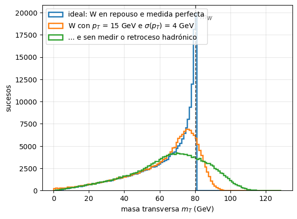
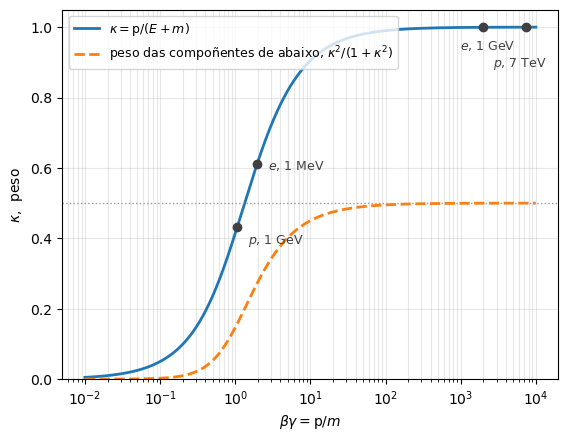

2. Perspectivas: experimental e teórica#
# Configuración: o código auxiliar está no paquete notebooks/fnyp/
try:
import fnyp
except ModuleNotFoundError: # en Google Colab hai que traer antes o repositorio
!git clone -q https://github.com/xabiercidvidal/USC-FNeP.git
import sys; sys.path.append('USC-FNeP/notebooks')
from fnyp.inicio import *
Last version Fri Sep 25 14:42:03 2026
2.1. Obxectivos#
No tema anterior vimos que se mide: a sección eficaz, a vida media, o invariante \(s\), a fracción de desintegración. Este tema mira o mesmo campo desde os dous lados en que se traballa:
A perspectiva experimental: como se converte unha partícula en cuadrimomentos.
Como se producen as partículas que se estudan: os aceleradores.
Como interaccionan coa materia, que é o único que permite detectalas.
Que sinatura deixa cada unha e con que detectores se recolle.
Que lle ocorre ao dato desde o sensor ata a figura dun artigo.
A perspectiva teórica: como se calcula ese mesmo número.
O corazón da teoría é o cálculo do elemento de matriz.
Como se describen os fermións libres? A ecuación de Dirac.
De onde sae a interacción? A simetría gauge.
A interacción de contacto de catro fermións: a teoría de Fermi.
Os diagramas de Feynman.
Trátase dunha aproximación, de intentar comprender os elementos fundamentais sen entrar no detalle do cálculo.
2.2. Unha perspectiva experimental#
Un experimento de partículas é unha cadea: unha máquina produce as partículas, estas deixan enerxía nun material, uns sensores recollen esa enerxía e unha análise convértea nun resultado.
A partir deses depósitos reconstruímos, dependendo do caso, a traxectoria, o momento, a identidade da partícula, e logo a partir deles a sección eficaz ou a vida media ou a fracción de desintegración.
A cadea ten catro elos, e imos percorrelos pola súa orde:
o acelerador produce as partículas |
de onde saen, e con que enerxía? |
a partícula interacciona coa materia |
canta enerxía deixa, e de que forma? |
o detector recolle ese sinal |
que sinal deixa cada partícula? |
a análise converte sucesos en observables |
como se pasa de sinais a estimar un valor co seu erro? |
2.2.1. Aceleradores#
De onde saen as partículas que chocan?
Nun acelerador só se poden acelerar partículas cargadas e estables: \(p\), \(\bar{p}\), \(e\), \(e^+\) e ións. Agrúpanse en paquetes (bunches) de \(\mathcal{O}(10^{11})\) partículas que circulan por un tubo en ultraalto baleiro, e sobre eles actúan tres sistemas:
cavidades de radiofrecuencia, que aceleran con gradientes de potencial sincronizados co paso do paquete;
imáns dipolares, que curvan a traxectoria para mantela na órbita;
imáns cuadripolares, que enfocan o feixe, porque os paquetes tenden a dispersarse.
E hai dúas familias: lineais, que o paquete percorre unha soa vez, e circulares, onde dá \(\mathcal{O}(10^5)\) voltas gañando enerxía en cada unha.
2.2.1.1. Aceleradores lineais#
|
|
principio dun acelerador lineal [WK] |
o linac de SLAC, 3 km |


O linac de SLAC (California), de \(3\) km, acelerou electróns ata \(50\) GeV; con el mediuse a sección eficaz de Mott (nuclear) e descubriuse a estrutura de partóns do protón.
Os aceleradores lineais son ademais o primeiro elo de calquera complexo de aceleradores, e a técnica de todos os aceleradores médicos.
2.2.1.2. Aceleradores circulares#
|
|
o complexo de aceleradores do CERN [>] |
vista aérea do LHC [CERN] |

A enerxía que alcanza un anel fíxaa un campo magnético perpendicular e o raio que se pode escavar, segundo a relación do electromagnetismo:
É a mesma fórmula coa que mediremos o momento dunha traza dentro dun detector: a física é idéntica, e só cambia quen é o dato e quen a incógnita.
Con imáns convencionais o ferro satura en \(\sim 2\) T: para subir hai que ir a imáns supercondutores. O Tevatron foi o primeiro gran anel supercondutor: \(\rho \simeq 0.75\) km e \(B \simeq 4.2\) T daban \(\simeq 1\) TeV. Os dipolos do LHC operan a \(8.3\) T e a unha temperatura de \(1.9\) K, máis fríos ca o espazo exterior.
2.2.1.2.1. O límite: a radiación de sincrotrón#
Unha carga acelerada radia, e unha partícula que xira está acelerada. A enerxía radiada por volta é
e ese \(m^4\) no denominador é o feito central da física de aceleradores: un electrón radia \((m_p/m_e)^4 \approx 10^{13}\) veces máis ca un protón da mesma enerxía.
Por iso os récords de enerxía son sempre de máquinas de protóns, e por iso LEP —\(e^+e\) no mesmo túnel de \(27\) km que hoxe ocupa o LHC— quedou en \(104\) GeV por feixe mentres que o LHC chega a \(7\) TeV. Por iso tamén, se se quere un colisionador \(e^+e\) de alta enerxía, ou se fai lineal (ILC, CLIC) ou se fai un anel moito maior (FCC-ee, \(91\) km).
[>] Tarefa — LEP fronte a LHC: o prezo de xirar
Para electróns, a enerxía radiada por volta é, na práctica,
e para outra partícula hai que multiplicar por \((m_e/m)^4\).
Canta enerxía perde por volta un electrón de LEP-II (\(E = 100\) GeV, \(\rho = 3096\) m)? Que fracción da súa enerxía é?
E un protón do LHC (\(E = 7\) TeV, \(\rho = 2804\) m), no mesmo túnel?
LEP daba \(11\,245\) voltas por segundo. Que potencia había que repoñer coas cavidades para manter os dous feixes, se cada un leva \(\sim 10^{12}\) electróns?
Que enerxía podería alcanzar LEP se se lle permitise radiar \(10\) veces máis por volta?
# Radiacion de sincrotron por volta: DE[keV] = 88.5 E^4[GeV] / rho[m] * (m_e/m)^4
m_e, m_p = 0.511, 938.3 # MeV
def sincrotron(E_GeV, rho_m, m_MeV=m_e):
return 88.5 * E_GeV**4 / rho_m * (m_e / m_MeV)**4 # keV por volta
dE_lep = sincrotron(100., 3096.) # LEP-II, electrons
dE_lhc = sincrotron(7000., 2804., m_p) # LHC, protons
print('LEP-II (e, 100 GeV) : {:8.2f} keV/volta = {:.2f} GeV'.format(dE_lep, dE_lep*1e-6))
print('LHC (p, 7 TeV): {:8.2f} keV/volta'.format(dE_lhc))
print('razon : {:.1e}'.format(dE_lep/dE_lhc))
LEP-II (e, 100 GeV) : 2858527.13 keV/volta = 2.86 GeV
LHC (p, 7 TeV): 6.67 keV/volta
razon : 4.3e+05
Solución
\(\Delta E = 88.5 \times 10^8 / 3096 = 2.9 \cdot 10^6\) keV \(\approx 2.9\) GeV por volta: case o \(3\,\%\) da súa enerxía, perdida e reposta \(11\,245\) veces por segundo. LEP era unha xigantesca lámpada de raios X.
\(88.5 \times 7000^4 / 2804 \times (0.511/938.3)^4 \approx 6.7\) keV por volta: un factor \(4 \cdot 10^5\) menos, malia que o protón ten \(70\) veces máis enerxía.
\(P = \Delta E \times f \times N = 2.9\ \mathrm{GeV} \times 1.12 \cdot 10^4\ \mathrm{s^{-1}} \times 10^{12} \approx 3.3 \cdot 10^{16}\) GeV/s \(\approx 5\) MW por feixe, \(\sim 10\) MW en total. Esa foi a parede de LEP: a potencia de radiofrecuencia necesaria crece como \(E^4\), e limitou a súa enerxía a \(\sim 104\) GeV por feixe. (Pechouse en 2000 para instalar o LHC no seu túnel.)
Como \(\Delta E \propto E^4\), un factor \(10\) na perda son \(10^{1/4} = 1.8\) na enerxía: apenas \(180\) GeV por feixe.
2.2.1.2.2. Aneis de almacenamento e colisionadores#
Un anel de almacenamento mantén circulando dous feixes en sentidos opostos durante horas. En determinados puntos de colisión, uns imáns comprimen os paquetes e crúzanos, e aí instálanse os experimentos.
No LHC os paquetes de \(\sim 10^{11}\) protóns miden uns \(40\) cm de longo e \(1\) mm de sección, que no punto de colisión se aperta ata \(\sim 10\ \mu\mathrm{m}\). Crúzanse cada \(25\) ns —\(40\) MHz—, e en cada cruzamento ocorren decenas de colisións protón-protón simultáneas (pile-up), das que só unha adoita interesar.
Os parámetros que definen un colisionador son os dous que xa coñecemos do tema anterior: a enerxía \(\sqrt{s}\), que fixa que se pode crear, e a luminosidade \(\mathcal{L}\), que fixa canto se crea. A relación entre ambos é
onde \(R\) é a razón de produción de interaccións en colisións. \(\mathcal{L}\) é a luminosidade instantánea, o que nos indica a capacidade da máquina para xerar interaccións (o equivalente ao fluxo \(\phi_a\) e ao número de brancos \(N_b\) nos experimentos de branco fixo).
A luminosidade mídese en \(\mathrm{cm}^{-2} \mathrm{s}^{-1}\), e a luminosidade integrada \(\mathcal{L}_{int}\) en b\(^{-1}\) (ou fb\(^{-1}\)), que é a unidade que aparece nos artigos.
O número de interaccións nun tempo vén dado pola luminosidade integrada:
colisionador |
laboratorio |
tipo |
período |
\(\sqrt{s}\) |
\(\mathcal{L}\) (cm\(^{-2}\)s\(^{-1}\)) |
descubrimentos |
|---|---|---|---|---|---|---|
SPS |
CERN |
\(p + \bar{p}\) |
1981-1991 |
540-630 GeV |
\(10^{30}\) |
\(W^\pm\), \(Z\) |
SLC |
SLAC |
\(e^+ + e\) |
1988-1998 |
91 GeV |
\(10^{30}\) |
(lineal) |
LEP |
CERN |
\(e^+ + e\) |
1989-2000 |
91-209 GeV |
\(10^{32}\) |
\(N_\nu = 3\), precisión do SM |
HERA |
DESY |
\(e + p\) |
1992-2007 |
320 GeV |
\(10^{31}\) |
estrutura do nucleón |
PEP-II |
SLAC |
\(e^+ + e\) |
1999-2008 |
10.5 GeV |
\(10^{34}\) |
violación de CP en \(B\) |
Tevatron |
Fermilab |
\(p + \bar{p}\) |
1987-2011 |
1.96 TeV |
\(4 \cdot 10^{32}\) |
quark \(t\) |
LHC |
CERN |
\(p + p\) |
2009- |
7-13.6 TeV |
\(2 \cdot 10^{34}\) |
Higgs |
SuperKEKB |
KEK |
\(e^+ + e\) |
2018- |
10.6 GeV |
\(5 \cdot 10^{34}\) |
(en marcha) |
Que ves? As máquinas de hadróns gañan en enerxía —son máquinas de descubrimento— e as de leptóns, en limpeza: a colisión é entre partículas elementais, con \(\sqrt{s}\) coñecido, e son máquinas de precisión. E a luminosidade subiu catro ordes de magnitude en trinta anos.
2.2.1.3. Feixes secundarios#
Non todo o que se quere lanzar contra algo é estable. Os feixes de \(\pi\), \(K\), \(\mu\) e \(\nu\) fabrícanse en dous pasos: gólpease cun feixe primario de protóns un branco fixo, e dos restos selecciónase o que interesa.
esquema dun feixe de neutrinos [Fermilab] |
o feixe de \(\nu\) de Fermilab cara a DUNE (en construción) [Fermilab] |
A selección fana imáns axustados para deixar pasar só unha carga e un momento determinados. Para un feixe de neutrinos déixase ademais que os pións se desintegren en voo, \(\pi^+ \to \mu^+ + \nu_\mu\), nun túnel de desintegración, e despois absórbense en rocha os muóns e todo o demais: o único que atravesa centos de metros de terra é o neutrino. É a técnica dos experimentos de oscilacións.
2.2.2. Que chega ao detector?#
Que partículas chegan a detectarse?
Das partículas que aparecen nunha interacción, só un puñado vive o suficiente para percorrer o detector e deixar unha sinatura directa:
As estables (á escala do detector): \(p\), \(e\), \(\gamma\), \(\nu\), \(n\).
As de vida media longa, que percorren \(\mathcal{O}\)(m) ou máis antes de desintegrarse: \(\mu\), \(K^\pm\), \(K^0_L\), \(\pi^\pm\).
Estas detéctanse como traxectorias ou como depósitos de enerxía. A súa identidade dedúcese de como penetran, canto ionizan, canta luz producen e en que se desintegran.
As demais —a inmensa maioría— non chegan nunca a un sensor. Detéctanse de forma indirecta, e de dúas maneiras segundo o que vivan:
Se a partícula voa \(\mathcal{O}\)(mm–cm) antes de desintegrarse (\(\tau\), hadróns con \(b\) ou \(c\), como o \(B^0_s\)), os detectores de trazas (ou vértices) precisos reconstrúen o seu vértice de desintegración, separado do punto da colisión.
Se a súa vida é tan curta que se desintegra onde se produciu (\(Z\), \(W\), \(\rho\), \(\Delta\)), só queda o rastro dos seus produtos: aparece como unha resonancia na sección eficaz fronte á enerxía, ou como un pico na masa invariante do que sae.
As dúas cousas —o pico do \(Z\) en OPAL, o pico do \(B^0_s\)— xa as vimos no tema anterior. Agora imos ver de onde saen os cuadrimomentos cos que se constrúen eses picos.
2.2.3. Interacción coa materia#
Como se ve algo que non podemos alcanzar?
Unha partícula só é visible se deixa parte da súa enerxía no material que atravesa. E déixaa de tres maneiras distintas, segundo o que sexa:
partículas |
mecanismo dominante |
escala característica |
|---|---|---|
cargadas (\(e\), \(\mu\), \(p\), \(\pi^\pm\), \(K^\pm\)) |
ionización e excitación do medio |
\(\mathrm{d}E/\mathrm{d}x\) |
\(e\) e \(\gamma\) de alta enerxía |
bremsstrahlung e produción de pares |
lonxitude de radiación, \(X_0\) |
hadróns |
interacción forte cos núcleos |
lonxitude de interacción, \(\lambda_I\) |
Os tres mecanismos coexisten: un electrón ioniza e radia, un pión ioniza e choca cun núcleo. O que cambia é cal domina, e iso depende da partícula, da súa enerxía e do material.
2.2.3.1. As partículas cargadas: ionización#
Unha partícula cargada que atravesa un medio interacciona electromagneticamente cos electróns dos átomos: excítaos ou arríncaos (ioniza). En cada choque perde moi pouca enerxía —arrincar un electrón custa \(\mathcal{O}(10)\) eV— pero hai moitísimos choques, e o efecto acumulado é unha perda continua e predicible.
A maior parte dos detectores de traxectorias baséanse en recoller eses electróns de ionización.
A perda media de enerxía por unidade de camiño dáa a fórmula de Bethe-Bloch (anos 30):
onde \(K = 4\pi \hbar^2 \alpha^2 N_A / m_e = 0.307\) MeV cm\(^2\)/mol, \((A, Z)\) caracterizan o material, \(\rho\) é a súa densidade, \(I\) o seu potencial medio de ionización, e \(z\) (a carga, en unidades de \(e\)), \(\beta\) e \(\gamma\) son os da partícula incidente.
Convén lela amodo, porque di tres cousas nada obvias:
non depende da masa da partícula incidente, só da súa velocidade \(\beta\) e da súa carga. Un \(\pi^\pm\) e un \(p\) coa mesma \(\beta\) perden o mesmo;
vai como \(1/\beta^2\): canto máis amodo, máis ioniza;
dividida pola densidade, \(\frac{1}{\rho}\frac{\mathrm{d}E}{\mathrm{d}x}\), é case a mesma para todos os materiais (\(Z/A \simeq 0.5\) agás no hidróxeno).
Isto fai que a curva sexa practicamente universal en función de \(\beta\gamma\):
|
perda de enerxía por ionización [PDG] |

Que ves? A curva ten tres rexións, e cada unha ten unha consecuencia práctica:
\(\beta\gamma \lesssim 1\): a perda crece como \(1/\beta^2\). Como a partícula se vai freando, ioniza cada vez máis, e o depósito é máximo xusto antes de pararse: é o pico de Bragg, no que se basea a hadronterapia.
\(\beta\gamma \sim 3\)–\(4\): o mínimo. Unha partícula aí chámase MIP (minimum ionizing particle) e perde \(1\)–\(2\) MeV cm\(^2\)/g (\(\simeq 1.5\) en ferro), case independentemente do material. En ferro, \(\simeq 11\) MeV/cm. Case todas as partículas cargadas dun experimento de altas enerxías están nesta rexión ou por riba.
\(\beta\gamma \gtrsim 100\): a perda volve subir, agora logaritmicamente. É a subida relativista, e é o que permite identificar partículas medindo \(\mathrm{d}E/\mathrm{d}x\).
A distancia que percorre unha partícula ata deterse é o seu alcance. Obtense integrando \(\mathrm{d}E/\mathrm{d}x\) desde a súa enerxía inicial ata cero.
2.2.3.2. Electróns e fotóns#
Un electrón, ademais de ionizar, radia fotóns ao ser desviado polo campo do núcleo. É a radiación de freado ou bremsstrahlung:
A sección eficaz calcúlase en QED e vai como \(\sigma_b \propto E/m^2\): a masa ao cadrado no denominador é o decisivo. Un muón radia \((m_e/m_\mu)^2 \approx 1/43000\) veces menos ca un electrón, e por iso por debaixo de \(\mathcal{O}(100)\) GeV os muóns só ionizan —e por iso atravesan o detector enteiro—.
Por riba dunha enerxía crítica \(E_c\) a radiación supera a ionización:
que vale \(\simeq 22\) MeV en ferro e \(\simeq 7\) MeV en chumbo. Por riba dunhas poucas decenas de MeV, un electrón nun material denso esencialmente só radia.
Por riba de \(E_c\) a perda é proporcional á enerxía, e iso fai que a caída sexa exponencial no camiño:
A constante \(X_0\) é a lonxitude de radiación: a distancia na que un electrón perde, en promedio, unha fracción \(1 - 1/e\) da súa enerxía. Depende só do material (\(X_0 = 1/(n\sigma_b)\), con \(n\) a densidade de núcleos) e é a escala coa que se deseñan os calorímetros:
H\(_2\) (gas) |
H\(_2\)O |
C (grafito) |
Xe (líq.) |
Fe |
PbWO\(_4\) |
Pb |
|---|---|---|---|---|---|---|
7 km |
36.1 cm |
18.8 cm |
2.87 cm |
1.76 cm |
0.89 cm |
0.56 cm |
|
perda de enerxía dos electróns en chumbo [AB1.1] |

Os fotóns non ionizan: desaparecen ou dispérsanse nun único suceso. Cal domina depende da enerxía:
enerxía |
proceso |
|---|---|
\(\lesssim 100\) keV |
efecto fotoeléctrico, \(\gamma + \mathrm{átomo} \to e + \mathrm{ion}\) |
\(\sim\) MeV |
dispersión Compton, \(\gamma + e \to \gamma + e\) |
\(\gtrsim 10\) MeV |
produción de pares, \(\gamma + (A,Z) \to e^+ + e + (A,Z)\) |
|
sección eficaz de fotóns en chumbo [AB1.1] |

A alta enerxía, onde domina a produción de pares, a sección eficaz pódese escribir en termos da mesma \(X_0\) ca a dos electróns:
onde \(\lambda_\gamma\) é o camiño libre medio do fotón, e a intensidade dun feixe de fotóns cae como \(I(x) = I_0 \, e^{-x/\lambda_\gamma}\).
Que unha soa constante, \(X_0\), goberne á vez a radiación dos electróns e a conversión dos fotóns non é casualidade: os dous procesos son o mesmo diagrama de QED coas patas cambiadas de sitio. E é o que fai posible o calorímetro.
A cascada electromagnética. Un electrón de alta enerxía radia un fotón; o fotón convértese nun par \(e^+ e\); cada un deles volve radiar. En cada \(X_0\), o número de partículas duplícase e a enerxía por partícula divídese por dous. O proceso detense cando a enerxía cae por debaixo de \(E_c\) e a ionización toma o relevo.
|
|
esquema dunha cascada [AB] |
cascada real [AB] |

Dúas consecuencias, as dúas importantes:
o máximo da cascada está a \(t_{max} \simeq \ln(E_0/E_c)\) lonxitudes de radiación: a profundidade necesaria crece logaritmicamente coa enerxía;
o número total de partículas producidas é proporcional a \(E_0\), e polo tanto o sinal recollido tamén. Iso é un calorímetro.
2.2.3.3. Os hadróns#
Un hadrón cargado ioniza coma calquera partícula cargada, pero ademais choca cos núcleos do material por interacción forte. Ese choque rompe e produce máis hadróns. A escala aquí non é \(X_0\) —que é electromagnética— senón a lonxitude de interacción nuclear \(\lambda_I\), que é a distancia media entre choques fortes:
Fe |
|
|---|---|
\(\lambda_I\) |
16.8 cm |
\(X_0\) |
1.76 cm |
En ferro \(\lambda_I / X_0 \approx 10\): un hadrón penetra moito máis ca un electrón da mesma enerxía. De aí a orde das capas dun experimento.
A cascada hadrónica é moito máis irregular ca a electromagnética:
nela prodúcense \(\pi^0\), que se desintegran \(\pi^0 \to \gamma + \gamma\) e inician unha cascada electromagnética dentro da hadrónica. A fracción de enerxía que se vai por esa vía flutúa suceso a suceso;
parte da enerxía pérdese en romper e excitar núcleos, e non produce sinal: é a enerxía invisible.
As dúas cousas empeoran a resolución dos calorímetros hadrónicos nun factor \(\sim 5\) fronte aos electromagnéticos, como veremos.
[>] Tarefa — Canto ferro para parar cada partícula?
Tes catro partículas de \(10\) GeV e un bloque de ferro (\(X_0 = 1.76\) cm, \(\lambda_I = 16.8\) cm, \(E_c = 22\) MeV, \(\mathrm{d}E/\mathrm{d}x|_{\mathrm{MIP}} \simeq 11\) MeV/cm). Estima o espesor que necesitas para absorber cada unha:
un electrón. Unha cascada electromagnética está contida ao 95 % nunhas \(t_{max} + 10\) lonxitudes de radiación.
un pión cargado. Unha cascada hadrónica necesita unhas \(6\,\lambda_I\).
un muón, que non fai cascada: só ioniza.
un neutrino (calculáchelo no tema anterior).
Que che di o resultado sobre a orde en que hai que poñer os detectores?
Solución
\(t_{max} = \ln(10^4/22) \approx 6.1\), logo \(\approx 16 \, X_0 \approx 28\) cm. Uns 30 cm.
\(6 \times 16.8 \approx 100\) cm. Un metro, tres veces máis ca o electrón.
\(10^4\ \mathrm{MeV} \, / \, 11\ \mathrm{MeV/cm} \approx 900\) cm. Uns 9 metros —e é unha sobreestimación, porque só está no mínimo durante parte do percorrido; o alcance real é algo menor. Aínda así, unha orde de magnitude máis ca o pión.
Con \(\sigma \simeq 0.7 \cdot 10^{-38}\,E\,[\mathrm{GeV}]\) cm\(^2\) por nucleón, a \(10\) GeV \(\lambda \sim 3 \cdot 10^{12}\) cm \(\sim 10^{7}\) km de ferro: non se para. Nun metro de ferro interacciona un de cada \(\sim 3 \cdot 10^{10}\) (os anos luz son para os neutrinos de MeV).
A orde das capas é exactamente a orde desta lista: primeiro as trazas (que non deben estragar nada), logo o calorímetro electromagnético, que para \(e\) e \(\gamma\) en \(\sim 30\) cm; detrás o hadrónico, que necesita un metro; e ao final, fóra de todo, as cámaras de muóns, porque o único que pode chegar ata aí é un muón. O neutrino vaise, e o seu rastro é a enerxía que falta.
2.2.4. Detección e identificación de partículas#
Como se sabe que aquilo era un electrón e non un pión?
Non hai ningún detector que diga «electrón». O que hai é unha combinación de sinaturas: se deixou traza ou non, onde depositou a súa enerxía e ata onde chegou. Con catro capas abonda para separar todo o que sae dunha colisión:
partícula |
traza (campo \(B\)) |
calorímetro EM |
calorímetro hadrónico |
cámaras de \(\mu\) |
|---|---|---|---|---|
\(e\), \(e^+\) |
si |
para |
— |
— |
\(\gamma\) |
non |
para |
— |
— |
\(\mu\) |
si |
deixa pouco |
deixa pouco |
si |
\(\pi^\pm\), \(K^\pm\), \(p\) |
si |
comeza |
para |
— |
\(n\), \(K^0_L\) |
non |
comeza |
para |
— |
\(\nu\) |
non |
— |
— |
— |
A traza separa as cargadas das neutras (\(e\) de \(\gamma\), \(\pi^\pm\) de \(n\)); onde remata a partícula separa o resto (\(e\) no calorímetro EM, hadrón no hadrónico, \(\mu\) nas cámaras). O neutrino identifícase polo que falta: o desequilibrio de momento transverso, \(p_T^{miss}\).
Este é o corte de CMS, e lese exactamente coma a táboa anterior:
sección transversal do Compact Muon Solenoid (CMS) do LHC |
Ademais desta separación grosa, hai medidas que afinan a identificación:
a razón \(E/p\) entre a enerxía do calorímetro e o momento da traza vale \(\simeq 1\) para un electrón e \(< 1\) para un hadrón;
o \(\mathrm{d}E/\mathrm{d}x\) medido no detector de trazas separa partículas do mesmo momento e distinta masa (verémolo na TPC de ALICE);
a luz Cherenkov dá \(\beta\), e co momento da traza, a masa;
os vértices desprazados identifican o que viviu o xusto para voar uns mm.
2.2.4.1. O momento transverso perdido#
Como se mide o que non deixa ningún sinal?
Nun colisionador de hadróns o que choca non son os protóns, senón os seus constituíntes, cada un cunha fracción descoñecida do momento do protón. O momento inicial ao longo do feixe non se coñece; o transverso ao feixe, si: é cero. E se o era ao principio, sono ao final. Por iso o plano transverso é o plano natural da análise: é o único no que se pode impoñer conservación do momento.
Se ao sumar o momento transverso de todo o reconstruído o resultado non é cero, algo se foi sen deixar sinal, e o que falta é xusto o seu momento transverso:
|
o momento que falta é o do neutrino, en \(W \to e + \bar{\nu}\) |

O \(E^{miss}_T\) é a sinatura das partículas «pantasma»: as que atravesan o detector enteiro sen interaccionar. No Modelo Estándar só hai unha, o neutrino; calquera outra sería nova física —materia escura, partículas supersimétricas—, e daría exactamente o mesmo sinal. Buscar «algo que escapa» é, literalmente, buscar \(E^{miss}_T\).
Non é un subdetector máis: é unha resta sobre todo o suceso. Por iso os experimentos constrúense herméticos (de aí o \(4\pi\)): un burato, unha fenda entre calorímetros ou un jet mal medido producen un \(E^{miss}_T\) falso.
2.2.4.2. A masa transversa#
Da partícula fuxitiva obtense só o seu \(p_T\), non a súa compoñente lonxitudinal: non hai cuadrimomento, e polo tanto tampouco masa invariante. No seu lugar úsase a masa transversa; por exemplo, en \(W \to e + \bar{\nu}\):
con \(\Delta\phi\) o ángulo entre ambos no plano transverso. Cúmprese \(m_T \leq m_W\), e a distribución ten un bordo (pico xacobiano) en \(m_W\): así se descubriu o \(W\) no SPS (1983) e así se segue medindo a súa masa no LHC.
Un caso distinto: \(e^+ + e\). Alí coñécese o estado inicial enteiro, así que se pode usar a enerxía perdida, non só a transversa. O exemplo clásico é a anchura invisible do \(Z\) en LEP: o que non se ve en ningunha parte mide o número de familias de neutrinos, \(N_\nu = 3\).
[>] Tarefa — O bordo que mediu a masa do W
De \(W \to e + \bar{\nu}\) só se reconstrúe o \(p_T\): non hai masa invariante, senón masa transversa, \(m^2_T = 2 \, p^e_T \, p^{miss}_T \, (1 - \cos \Delta\phi)\).
Simula a desintegración con t2.masa_transversa() e responde:
Co W en repouso, \(\Delta\phi = \pi\) e \(m_T = m_W \sin\theta^*\). Se \(\cos\theta^*\) se reparte uniforme, por que se amorean os sucesos xusto en \(m_T \to m_W\)?
Dálle ao W un momento transverso, sen resolución (
sigma=0). Móvese o bordo? Por que?Engade agora a resolución. Que fracción de sucesos aparece por riba de \(m_W\), que é cinematicamente imposible?
E se o detector non mide o retroceso hadrónico? Canto custa non ser hermético?
Con \(\sim 10^4\) sucesos, con que precisión situarías o bordo? Compara co erro actual de \(m_W\), \(\sim 10\) MeV.
# W -> e + nu: o bordo da masa transversa en tres condicions de medida
r = t2.masa_transversa(n=200000, pt_w=15., sigma=4., seed=7)
# para a pregunta 2, illar o efecto do pT do W: t2.masa_transversa(sigma=0.)
ideal: W en repouso e medida perfecta : máximo en mT = 80.5 GeV, 0.00 % por riba de mW
W con $p_T$ = 15 GeV e $\sigma(p_T)$ = 4 GeV : máximo en mT = 75.1 GeV, 15.16 % por riba de mW
... e sen medir o retroceso hadrónico : máximo en mT = 69.7 GeV, 26.46 % por riba de mW
(o pT do W por si só, sen resolución) : 0.00 % por riba de mW

Solución
Con \(m_T = m_W \sin\theta^*\) e \(\cos\theta^*\) uniforme, o cambio de variable arrastra un xacobiano:
\[\frac{\mathrm{d}N}{\mathrm{d}m_T} \propto \frac{m_T/m^2_W}{\sqrt{1 - (m_T/m_W)^2}}\]que diverxe en \(m_T \to m_W\). De aí o nome de pico xacobiano: non é unha resonancia, é xeometría. O bordo está en \(m_W\) porque \(\sin\theta^* \leq 1\).
Non se move. Mentres o retroceso estea medido, \({\bf p}^{miss}_T = {\bf p}^\nu_T\) e \(m_T \leq m_W\) segue sendo exacta: a simulación dá \(0.00\,\%\) de sucesos por riba. A masa transversa está construída para ser insensible ao boost.
Con \(\sigma(p_T) = 4\) GeV por compoñente, un \(\sim 15\,\%\) dos sucesos vai por riba de \(m_W\) e o máximo baixa a \(\sim 76\) GeV. O bordo deixa de ser unha parede e pasa a ser unha pendente: medir \(m_W\) é axustar a forma desa pendente, e por iso cómpre coñecer a escala de enerxía do electrón ao nivel de \(10^{-4}\).
Tomando \({\bf p}^{miss}_T = -{\bf p}^e_T\), o máximo cae a \(\sim 69\) GeV e un \(26\,\%\) supera \(m_W\). O \(E^{miss}_T\) é unha resta sobre todo o suceso: un burato no calorímetro fabrica neutrinos que non existen. Esa é a razón física da hermeticidade.
O bordo medido ten unha anchura da orde de \(\sqrt{2}\,\sigma(p_T) \sim 6\) GeV; con \(10^4\) sucesos a posición localízase, no mellor dos casos, con \(\sim 6/\sqrt{10^4} = 60\) MeV. Chegar aos \(10\) MeV de hoxe esixe \((60/10)^2 \times 10^4 \sim 4 \cdot 10^5\) sucesos e que os sistemáticos —escala de enerxía, modelo do \(p_T\) do W, PDF— estean por debaixo diso. A estatística é a parte fácil.
2.2.5. Os detectores#
2.2.5.1. Detectores de trazas: gasosos#
Recollen os electróns de ionización que a partícula deixa ao seu paso nun gas nobre (Ar, Xe), a razón dun par ión-electrón por cada \(\sim 30\) eV depositados.
O principio é sempre o mesmo: un campo eléctrico \({\bf E}\) fai derivar eses electróns ata un ánodo, onde a súa carga se amplifica e se le. Trabállase en réxime proporcional —o sinal é proporcional á carga orixinal, sen avalancha descontrolada—, o que permite medir tamén canto ionizou a partícula.
Hai moitas variantes: cámaras de fíos, cámaras proporcionais multifío (MWPC, Charpak, Nobel 1992), cámaras de deriva e cámaras de proxección temporal (TPC).
2.2.5.1.1. Cámaras de proxección temporal (TPC)#
Unha TPC é un gran volume de gas, normalmente un barril, cun cátodo de alta voltaxe no centro e dúas tapas como ánodos.
A idea é elegante: as dúas coordenadas transversas, \((r, \phi)\) ou \((x, y)\), dáas o punto do ánodo segmentado onde chega a carga; a terceira, \(z\), dáa o tempo de chegada, porque os electróns derivan con velocidade coñecida. De aí o nome. Cun só detector reconstrúese a traxectoria en tres dimensións.
suceso reconstruído en ALICE [ALICE] |
As TPC úsanse tamén, con gas ou líquido nobre, nos experimentos de materia escura (XENON, LZ) e de neutrinos (EXO, NEXT, e as TPC de argon líquido de DUNE).
Ademais da traxectoria, unha TPC mide a ionización de cada traza, e con ela identifica a partícula: para un mesmo momento, cada masa dá un \(\mathrm{d}E/\mathrm{d}x\) distinto, porque o que entra en Bethe-Bloch é \(\beta\).
|
perda de enerxía medida na TPC de ALICE [ALICE] |

Que ves? Cada banda é unha especie de partícula (\(e\), \(\pi\), \(K\), \(p\), \(d\)). A fórmula de Bethe-Bloch dá o valor medio; a anchura de cada banda é a flutuación no número de colisións cos electróns do medio (distribución de Landau, cunha cola longa cara arriba). Onde as bandas se cruzan, a identificación falla.
[>] Tarefa — Ata onde identifica unha TPC?
A ionización non depende do momento, senón de \(\beta\gamma = p/m\): a momento fixo, cada masa ioniza distinto, e iso converte unha TPC nun identificador.
Debuxa as bandas con t2.dedx() e responde:
Por que cae como \(1/\beta^2\) ao principio e sobe amodo ao final? Onde está o mínimo, en \(\beta\gamma\) e en momento para cada partícula?
Ata que momento se separan \(K\) e \(p\)? E \(\mu\) e \(\pi\)? Que ten que ver a resposta co cociente das súas masas?
A banda do electrón cruza as dos hadróns. Que ambigüidade crea iso e con que outro subdetector se resolve?
Mellora a resolución do \(7\,\%\) ao \(5\,\%\) (
resolucion=0.05). Canto se gaña no límite de separación \(K/p\)? Compensa o esforzo?
# dE/dx fronte ao momento: as bandas dunha TPC e o seu solapamento
r = t2.dedx(resolucion=0.07, seed=7)
e/$\mu$ : distínguense (> 2 sigma) ata p = 10.00 GeV, pero crúzanse en 0.10 GeV
$\mu$/$\pi$ : distínguense (> 2 sigma) ata p = 0.17 GeV
$\pi$/K : distínguense (> 2 sigma) ata p = 10.00 GeV, pero crúzanse en 0.93 GeV
K/p : distínguense (> 2 sigma) ata p = 1.37 GeV

Solución
A baixa enerxía manda o \(1/\beta^2\): a partícula lenta pasa máis tempo xunto a cada electrón do medio e transfírelle máis impulso. A alta enerxía o logaritmo levanta a curva —a subida relativista— ata a meseta. O mínimo está sempre en \(\beta\gamma \simeq 3.1\) (de aí a MIP, minimum ionizing particle), o que en momento é \(p \simeq 3m\): \(0.33\) GeV para o \(\mu\), \(0.44\) para o \(\pi\), \(1.6\) para o \(K\) e \(\sim 3\) GeV para o protón.
Cun \(7\,\%\) de resolución: \(K/p\) sepáranse ata \(\sim 1.4\) GeV, \(\pi/K\) aguantan ata o final do rango, e \(\mu/\pi\) apenas ata \(0.17\) GeV. A orde dáa o cociente de masas, porque a banda se despraza en \(\log p\) como \(\log m\): \(m_K/m_\pi = 3.5\), \(m_p/m_K = 1.9\), \(m_\pi/m_\mu = 1.3\). Separar \(\mu\) de \(\pi\) por ionización é, na práctica, imposible.
O electrón está na meseta xa desde \(p \sim 10\) MeV, así que a súa banda é case plana e corta as dos hadróns arredor de \(0.1\)–\(0.2\) GeV. Aí o \(\mathrm{d}E/\mathrm{d}x\) non distingue \(e\) de \(\pi\); resólvese co calorímetro electromagnético (\(E/p \simeq 1\) para o electrón) ou cun detector de radiación de transición.
O límite \(K/p\) pasa de \(1.37\) a \(1.52\) GeV: un \(11\,\%\) máis de alcance por un \(30\,\%\) mellor de resolución. A separación en \(\sigma\) crece como \(1/\text{resolución}\), pero as bandas converxen exponencialmente en \(\log p\), así que o alcance en momento crece moi amodo. Por iso, para identificar a alto momento non se afina o \(\mathrm{d}E/\mathrm{d}x\): cámbiase de técnica (Cherenkov, tempo de voo).
2.2.5.1.2. Detectores de silicio#
Son o mesmo principio, en estado sólido. Pártese dunha oblea de silicio de \(\sim 300\, \mu\mathrm{m}\) de espesor na que se dopan tiras (strips) tipo \(p\) separadas \(\sim 50\, \mu\mathrm{m}\), formando unións \(pn\) que se polarizan en inversa para baleiralas de portadores libres.
esquema dun sensor de microtiras de silicio |
Ao pasar unha partícula cargada crea pares electrón-oco, e aquí está a vantaxe: en silicio custa \(3.6\) eV crear un par, case dez veces menos que ionizar un gas. Moito máis sinal, en moito menos espesor.
O prezo é o custo e a cantidade de canles de electrónica; a ganancia, unha precisión de \(\sim 10\, \mu\mathrm{m}\) por punto, suficiente para separar o vértice da colisión do vértice de desintegración dunha partícula que voou \(\sim 1\) mm.
|
|
detector de vértices de DELPHI |
vista transversa dun suceso [DELPHI] |

Iso é o que permite etiquetar hadróns con \(b\) ou \(c\), e con iso case toda a física do quark top, do Higgs a \(b \bar b\) e da violación de CP. ATLAS, CMS e LHCb úsanos hoxe; desenvolvéronse nos anos 80 e foron decisivos en LEP, BaBar e Belle.
2.2.5.1.3. Medir o momento: o campo magnético#
Un detector de trazas dá a traxectoria, non o momento. O momento aparece cando se mergulla todo o detector nun campo magnético: a partícula cargada describe unha hélice, e a súa curvatura no plano perpendicular a \({\bf B}\) mide o seu momento:
con \(p_T\) en GeV, \(B\) en T e o raio de curvatura \(\rho\) en m. A \(p_T\) chámaselle momento transverso, e é a cantidade que se usa nun colisionador porque, a diferenza do momento lonxitudinal, se conserva de forma útil: os restos do protón vanse polo tubo do feixe e non se ven.
É a fórmula coa que se dimensiona un anel de aceleración, lida ao revés: alí fixábase a enerxía e despexábase \(B\rho\); aquí mídense \(B\) e \(\rho\) e despéxase o momento. O signo da curvatura dá ademais a carga da partícula.
[>] Tarefa — Ata que momento se pode medir unha traza?
O detector de trazas de CMS ten un raio de \(R = 1.1\) m e está dentro dun solenoide de \(B = 3.8\) T. Cada punto da traza mídese cunha precisión de \(\sim 10\, \mu\mathrm{m}\).
O que se mide de verdade non é o raio, senón a saxita: a separación entre a traxectoria curva e a corda que une os seus extremos, \(s \simeq L^2/(8\rho)\), con \(L\) a lonxitude da traza.
Cal é o raio de curvatura dunha partícula de \(p_T = 1\) GeV? E de \(100\) GeV?
Calcula a saxita da de \(100\) GeV ao longo do detector enteiro.
Repite para \(p_T = 1\) TeV. Que lle pasa á resolución \(\sigma_{p_T}/p_T\) cando sobe o momento? Por que se di que un tracker mide ben as partículas lentas?
Solución
\(\rho = p_T / (0.3 B) = 1/(0.3 \times 3.8) = 0.88\) m para \(1\) GeV —cúrvase dentro do propio detector; con \(2\rho = 1.75\) m aínda chega ao calorímetro, pero por debaixo de \(\sim 0.6\) GeV enroscaríase sen chegar— e \(\rho = 88\) m para \(100\) GeV: oitenta veces o tamaño do detector, case unha recta.
\(s = L^2/(8\rho) = 1.1^2/(8 \times 88) = 1.7 \cdot 10^{-3}\) m \(= 1.7\) mm. Fronte aos \(10\ \mu\mathrm{m}\) de cada punto, mídese con folgura.
A \(1\) TeV, \(\rho = 877\) m e \(s = 172\ \mu\mathrm{m}\): só \(17\) veces a precisión dun punto. Como \(s \propto 1/p_T\) e o erro na saxita é fixo,
\[\frac{\sigma_{p_T}}{p_T} = \frac{\sigma_s}{s} \propto p_T\]a resolución empeora linealmente co momento. É o contrario dun calorímetro, onde \(\sigma_E/E \propto 1/\sqrt{E}\) mellora ao subir a enerxía. Por iso nun experimento mídese o momento coa traza a baixa enerxía e a enerxía co calorímetro a alta enerxía, e por iso se loita por campos magnéticos grandes e detectores grandes: \(s \propto B L^2\).
2.2.5.2. Calorímetros#
Un calorímetro destrúe a partícula para medila: provoca unha cascada de partículas fillas e recolle un sinal proporcional ao número de partículas producidas, que é proporcional á enerxía incidente. A diferenza das trazas, funciona tamén con partículas neutras.
Un calorímetro electromagnético constrúese con material de \(X_0\) pequeno para que a cascada caiba. Hai dous deseños:
de mostraxe: capas alternas de material pasivo denso (Pb) onde se desenvolve a cascada, e material activo onde se le o sinal (centelleador, gas, Ar líquido). É o caso de ATLAS (Pb + Ar líquido);
homoxéneo: un só material que é á vez absorbente e activo. É o caso de CMS, con cristais de PbWO\(_4\) (\(X_0 = 0.89\) cm).
A resolución está limitada polas flutuacións estatísticas do número de partículas da cascada, \(N \propto E\), de onde \(\sigma_E / E \propto \sqrt{N}/N = 1/\sqrt{E}\):
Os centelleadores son o material activo máis común: conteñen moléculas que se excitan ao paso da partícula cargada e ao desexcitarse emiten luz visible, un fotón por cada \(\sim 100\) eV depositados. Esa luz lévase a un fotosensor. Hainos orgánicos (plásticos, rápidos e baratos) e inorgánicos (cristais, densos e con moita luz).
[>] Tarefa — Que profundo ten que ser un calorímetro?
Os cristais de PbWO\(_4\) do calorímetro de CMS miden \(23\) cm de longo, con \(X_0 = 0.89\) cm e \(E_c \simeq 10\) MeV.
A cascada dun electrón alcanza o seu máximo a \(t_{max} \simeq \ln(E_0/E_c)\) lonxitudes de radiación, e fan falta unhas \(10\)–\(15\) \(X_0\) máis para recoller a cola.
A que profundidade está o máximo da cascada dun electrón de \(100\) GeV? E canto cristal fai falta para contela? Compara cos \(23\) cm reais.
E para un electrón de \(1\) TeV? Canto habería que alongar o cristal?
Un hadrón de \(100\) GeV necesita \(\sim 6 \lambda_I\), e en ferro \(\lambda_I = 16.8\) cm. Por que o calorímetro hadrónico dun experimento é sempre moito máis voluminoso —e máis caro— ca o electromagnético?
Solución
\(t_{max} = \ln(10^5/10) = \ln 10^4 \approx 9.2\), é dicir \(\approx 8\) cm de cristal. Sumando a cola, \(\approx 22\)–\(25\,X_0 \approx 20\)–\(22\) cm: xusto os \(23\) cm de CMS. O detector está deseñado exactamente neste límite.
\(t_{max} = \ln(10^6/10) = 11.5\,X_0\): só 2.3 \(X_0\) máis, uns \(2\) cm. A profundidade crece como \(\ln E\), así que un calorímetro que vale para \(100\) GeV vale case igual para \(1\) TeV. É a gran virtude da calorimetría, e a razón de que sexa a técnica de alta enerxía por excelencia.
Porque a escala é outra: \(6 \times 16.8 \approx 1\) m de ferro fronte a \(20\) cm de cristal, cun volume que crece co cubo do raio. E ademais, con peor resolución (véxase máis abaixo). É o subdetector máis masivo e caro dun experimento.
2.2.5.2.1. Calorímetros hadrónicos#
Miden a enerxía dos hadróns —cargados e neutros— mediante a cascada hadrónica. Constrúense case sempre por mostraxe, con capas de material denso e material activo: o de ATLAS alterna ferro e plástico centelleador.
A resolución é moito peor ca a electromagnética, polo que xa vimos: a fracción de enerxía que se vai á compoñente electromagnética (vía \(\pi^0\)) flutúa, e hai enerxía invisible na rotura dos núcleos:
Un hadrón de \(100\) GeV xera unha cascada de algo máis dun metro de ferro (\(\sim 8\,\lambda_I\); crece como \(\ln E\)) e uns \(50\) cm de anchura: de aí o tamaño do subdetector.
2.2.5.3. Detectores Cherenkov#
Cando unha partícula cargada atravesa un medio máis rápido ca a luz nese medio, \(v > c/n\), a polarización do medio non se recompón a tempo e emite unha fronte de onda coherente: a luz Cherenkov, nun cono de semiángulo
|
esquema da emisión de luz Cherenkov |

Detectar o cono dá dúas cousas á vez: a dirección da partícula, \(\hat{\bf v}\), e a súa velocidade \(\beta\). Combinada co momento da traza, dá a masa: é a técnica de identificación dos RICH de LHCb.
E hai un uso máis, completamente distinto: os detectores de neutrinos. Con \(\sigma \sim 10^{-38}\) cm\(^2\), para ver neutrinos fai falta unha masa enorme, e a auga é o único que se pode permitir nesas cantidades.
|
|
interior de Super-Kamiokande |
anel Cherenkov dunha interacción de \(\nu_e\) [SK] |

Super-Kamiokande é un cilindro de \(50\) quilotoneladas de auga (\(n = 1.33\)), de \(39\) m de diámetro e \(41\) m de altura, con \(13\,000\) PMT nas paredes. Detecta o \(e\) ou o \(\mu\) que produce o neutrino ao interaccionar, \(\nu_e (\nu_\mu) + N \to e (\mu) + X\), polo anel de luz Cherenkov que proxectan. Un anel nítido é un \(\mu\); un difuso, un \(e\), porque o electrón fai cascada. É o mesmo detector co que se buscou a desintegración do protón.
[>] Tarefa — O limiar Cherenkov en auga
En auga, \(n = 1.33\).
Cal é a velocidade mínima \(\beta\) para emitir luz Cherenkov? E o \(\gamma\) correspondente?
Que enerxía cinética mínima necesita un electrón (\(m = 0.511\) MeV)? E un muón (\(m = 105.7\) MeV)?
Cal é a apertura máxima do cono?
Super-Kamiokande detecta neutrinos solares de \(\sim 7\) MeV polo electrón que dispersan. Podería detectar do mesmo xeito neutrinos desa enerxía que producisen un muón?
Solución
\(\beta_{min} = 1/n = 0.752\), e \(\gamma_{min} = 1/\sqrt{1 - \beta^2} = 1.52\).
\(E_{min} = \gamma_{min} m\), e a enerxía cinética é \(T = (\gamma_{min} - 1) m\): para o electrón, \(T \approx 0.52 \times 0.511 = 0.27\) MeV; para o muón, \(T \approx 0.52 \times 105.7 = 55\) MeV.
Con \(\beta \to 1\), \(\cos\theta = 1/1.33\) e \(\theta = 41^\circ\).
Non. Un neutrino de \(7\) MeV non ten enerxía nin para crear o muón (\(m_\mu = 106\) MeV), e moito menos para darlle os \(55\) MeV do limiar. Por iso os detectores de auga ven os neutrinos solares só por dispersión con electróns, e por iso o limiar experimental de SK está nuns poucos MeV. O electrón emite luz desde \(0.27\) MeV, pero por debaixo duns poucos MeV dá moi poucos fotóns e o fondo de radioactividade natural domínao.
2.2.5.4. Fotosensores: o PMT#
Case todo o anterior —centelleadores, Cherenkov, calorímetros— acaba producindo luz, e hai que convertela en sinal eléctrico. O instrumento clásico é o fotomultiplicador (PMT): o fotón arrinca un electrón dun fotocátodo por efecto fotoeléctrico, e ese electrón multiplícase nunha cascada de dínodos a potencial crecente ata dar un sinal medible, con ganancias de \(10^6\)–\(10^7\).
esquema de funcionamento dun PMT [WK] |
Hoxe conviven cos fotosensores de estado sólido (SiPM), compactos e insensibles ao campo magnético, que os están substituíndo en moitas aplicacións.
2.2.6. Os experimentos#
2.2.6.1. Experimentos en \(4\pi\)#
Nun colisionador a interacción ocorre nun punto e os produtos saen en todas direccións, así que o detector rodea o punto de colisión: por iso se lles chama experimentos \(4\pi\). Son cebolas de capas cilíndricas, e xa sabemos en que orde van:
detector de vértices e de trazas, o máis preto posible do feixe e o máis lixeiro posible, dentro dun solenoide cuxo \({\bf B}\) vai no eixe do cilindro;
calorímetro electromagnético, que para \(e\) e \(\gamma\);
calorímetro hadrónico, que para o resto de hadróns;
cámaras de muóns, fóra de todo, a miúdo intercaladas no ferro que pecha o campo magnético.
ATLAS, CMS, ALICE no LHC; ALEPH, DELPHI, L3 e OPAL en LEP; Belle II en SuperKEKB. Imaxes de CMS.
2.2.6.2. Experimentos de branco fixo ou cara adiante#
Nun experimento de branco fixo o centro de masas móvese, e todos os produtos saen cara adiante, nun cono estreito. Non ten sentido rodear nada: o detector móntase como unha secuencia de estacións ao longo do feixe, cun imán dipolar que desvía as trazas nun plano.
A orde dos subdetectores é a mesma; o que cambia é a xeometría. É tamén a configuración dos experimentos cara adiante nun colisionador, como LHCb, deseñado para física do quark \(b\), que se produce con ángulos pequenos.
|
esquema de LHCb no LHC |

2.2.7. Do dato ao resultado#
Que ocorre entre o sensor e a figura dun artigo?
No LHC hai un cruzamento de paquetes cada \(25\) ns e o detector ten \(\mathcal{O}(10^8)\) canles: son petabytes por segundo, varias ordes de magnitude por riba do que se pode gravar. A primeira decisión do experimento é, polo tanto, que tirar.
O sistema de disparo (trigger) decide en tempo real que sucesos se gardan. En ATLAS e CMS traballa en dous niveis: un hardware, con electrónica dedicada e unha lectura parcial do detector, que baixa de \(40\) MHz a \(\sim 100\) kHz en poucos microsegundos; e outro software, unha granxa de miles de CPU que reconstrúe o suceso parcialmente e baixa a \(\mathcal{O}(1)\) kHz.
O sistema de adquisición (DAQ) le, sincroniza e ensambla os fragmentos dos distintos subdetectores nun único suceso, e escríbeo.
Trigger e DAQ forman o online. O que o trigger descarta pérdese para sempre: é a decisión máis delicada do deseño dun experimento.
Despois, e xa sen présa, vén o offline: a reconstrución. Desde os sinais dos sensores súbense chanzos sucesivos:
Son programas de C++ e Python nos que participan decenas ou centenares de físicos, e que se executan en centros de computación distribuídos por todo o mundo (a Grid).
En paralelo simúlanse millóns de sucesos por Monte Carlo: xérase a física segundo o modelo, propáganse as partículas por unha descrición detallada do detector, simúlase a resposta de cada sensor e reconstrúese co mesmo programa ca os datos reais. Sen esa simulación non hai eficiencias, non hai aceptancias e non hai medida.
2.2.7.1. A análise#
Cos sucesos reconstruídos, a análise selecciona os que corresponden ao proceso que se busca e estima o observable. Aquí o que manda é a estatística: técnicas de clasificación (hoxe, redes neuronais), axustes de máxima verosimilitude, e un coidado extremo co que se usa de control —datos de calibración, rexións de control nos propios datos, simulación—.
Hai dúas escolas estatísticas, a frecuentista (a habitual no campo) e a bayesiana, e a diferenza importa á hora de interpretar un intervalo.
O resultado preséntase dunha destas dúas formas.
Unha estimación do observable —unha sección eficaz, unha vida media, unha masa, unha fracción de desintegración— con dous erros:
estatístico, que depende do número de sucesos e baixa como \(1/\sqrt{N}\);
sistemático, que recolle o que non se coñece con exactitude: calibración, eficiencias, modelos teóricos, luminosidade. Non baixa tomando máis datos, e acaba sendo o que limita as medidas maduras.
Por exemplo, a observación do Higgs en ATLAS.
Un límite, cando se busca algo e non se atopa: a vida media do protón, a masa do neutrino, a sección eficaz dun proceso novo. Dáse cun nivel de confianza (o \(90\,\%\) é o habitual) e sen erros, porque as incertezas xa están incorporadas no propio límite.
Por exemplo, o límite na masa do neutrino de KATRIN.
O que significa exactamente ese intervalo depende do método estatístico empregado: é a mesma discusión que vimos ao poñer o límite á desintegración do protón en Super-Kamiokande.
2.2.8. Recapitulación#
Da partícula ao número: os catro elos, máis a identificación:
o acelerador produce |
\(\sqrt{s}\) e \(\mathcal{L}\), coa parede de \(E^4/m^4\) |
a partícula interacciona |
ioniza (\(\mathrm{d}E/\mathrm{d}x\)), radia (\(X_0\)) ou choca (\(\lambda_I\)) |
o detector recolle |
trazas e \(p_T = 0.3B\rho\); calorímetros e \(\sigma_E/E \propto 1/\sqrt{E}\); Cherenkov e \(\beta\) |
as capas identifican |
onde para cada partícula di que era |
a análise mide |
trigger, reconstrución, simulación, e un número co seu erro ou un límite |
Este proceso permítenos estimar un observable, pero como o predicimos? Verémolo na sección da perspectiva teórica.
2.3. Unha perspectiva teórica#
De onde sae o número que o experimento mide?
A perspectiva experimental remataba nunha sección eficaz ou unha vida media medidas. A teórica comeza xusto aí: o mesmo número, calculado. O camiño ten seis chanzos:
os ingredientes: teoría cuántica de campos e cinemática;
o núcleo do cálculo: a regra de ouro e o elemento de matriz;
a ecuación de Dirac, que nos dá o fermión e a súa corrente;
a simetría gauge: da corrente ao vértice;
a teoría de Fermi: catro fermións nun punto;
os diagramas de Feynman e o propagador.
É unha visión, non unha dedución. As demostracións e os detalles están en ext-dirac e en ext-fundamentos.
2.3.1. Os ingredientes: teoría cuántica de campos e cinemática#
Que fai falta para predicir unha sección eficaz?
Dúas cousas, e convén separalas desde o principio:
a cinemática |
cantos estados finais caben: o espazo fásico |
a dinámica |
que interacciona e con que intensidade: o elemento de matriz \(M_{fi}\) |
Vimos parte da cinemática no tema anterior: masas, \(\sqrt{s}\), momentos no centro de masas. A dinámica é o novo, e o seu marco é a teoría cuántica de campos (TCC).
2.3.1.1. Por que campos e non funcións de onda#
A mecánica cuántica asocia unha función de ondas \(\psi(x)\) a unha partícula. Iso non abonda aquí, por dúas razóns:
nunha colisión as partículas créanse e destrúense: o número de partículas non é constante;
a Natureza fabrica partículas idénticas —o protón dun átomo de hidróxeno e o dun raio cósmico doutra galaxia son o mesmo obxecto—.
En TCC o obxecto fundamental é o campo, un por cada partícula fundamental, e as partículas son as súas excitacións: un operador crea unha partícula sobre o baleiro (con momento \(p\), espín \(s\) e carga \(q\)) e outro crea a súa antipartícula, coas cargas opostas (\(\bar{q}\)).
É a idea dos operadores escaleira do oscilador harmónico, coa partícula como cuanto de excitación do campo. Que os operadores fermiónicos anticonmuten é, nin máis nin menos, o principio de exclusión de Pauli.
2.3.2. Sección eficaz e vida media: o elemento de matriz#
Onde está exactamente a física?
A ponte entre a teoría e o que se mide é a regra de ouro de Fermi. Na súa forma adaptada á mecánica cuántica relativista, a frecuencia de transición, \(R\), dun estado inicial \(| i \rangle\) a un final \(\langle f |\) vén dada por:
e ten dous factores de natureza moi distinta:
\(\rho(E)\), a densidade de estados (o espazo fásico), que é só cinemática;
\(M_{fi}\), o elemento de matriz da interacción entre \(| i \rangle\) e \(\langle f |\), que é toda a dinámica.
Nesta forma, \(M_{fi}\) é un invariante Lorentz: vale o mesmo para todos os observadores. [MT3.1, MT3.2.2]
Todo o que vén despois desta transparencia —Dirac, a simetría gauge, Fermi, Feynman— é maquinaria para calcular \(M_{fi}\).
Resolta a parte cinemática, os dous casos que nos interesan quedan así, no centro de masas (onde \(^*\) marca as cantidades):
\(\Gamma(a \to b + c)\) |
\(\sigma(a + b \to c + d)\) |
|
|


Que ves? As dúas teñen a mesma estrutura: un factor cinemático coñecido —masas, momentos no CM, \(s = (E_a + E_b)^2\)— multiplicando a integral de \(|M_{fi}|^2\). A vida media e a sección eficaz do tema anterior son, do lado teórico, a mesma conta con distinto envoltorio.
Véxase ext-fundamentos, [MT3.3.1, MT3.4.2]
2.3.3. A ecuación de Dirac#
Que é un fermión, para poder escribir a súa corrente?
Punto de partida. En mecánica cuántica a enerxía e o momento son operadores:
Se se substitúen en \(E^2 = {\bf p}^2 + m^2\) obtense a ecuación de Klein-Gordon, \(-\partial^2_t \Psi = (-\nabla^2 + m^2)\Psi\). É de segunda orde no tempo, e a súa densidade de probabilidade pode ser negativa.
Como construír unha ecuación relativista que non teña estes problemas?
2.3.3.1. A idea de Dirac (1928)#
primeira orde en \(\partial_t\), como a ecuación de Schrödinger;
a relatividade trata \(t\) e \({\bf x}\) por igual: primeira orde tamén en \(\nabla\);
a ecuación de Einstein, \(E^2 = {\bf p}^2 + m^2\), debe seguir cumpríndose.
A ecuación máis xeral lineal nas derivadas é:
con catro coeficientes \(\gamma^\mu\) que non coñecemos. Ao elevala ao cadrado obtense a ecuación de Einstein, \(E^2 - {\bf p}^2 = m^2\), sempre que as \(\gamma^\mu\) cumpran a álxebra \(\{\gamma^\mu, \gamma^\nu\} = 2 g^{\mu\nu} I\). Dous números non poden anticonmutar: as \(\gamma^\mu\) son matrices \(4\times4\) e \(\Psi(x)\) ten catro compoñentes.
As matrices permítennos escribir unha ecuación lineal nas derivadas que, ao elevala ao cadrado, dá a ecuación de Einstein: elas codifican a métrica.
O prezo da linealidade é o que nos vai dar, sen poñelos a man, o espín \(1/2\) e as antipartículas.
Véxase ext-dirac, sección 1, para a construción paso a paso. [MT4.1, MT4.2]
2.3.3.2. Notación: contravariante e covariante#
Contravariante (índice arriba): $\( p^\mu = (E, {\bf p}), \;\; x^\mu = (t, {\bf x}) \)$
Covariante (índice abaixo): dada a métrica \(g_{\mu\nu} = \mathrm{diag}(1, -1, -1, -1)\):
Produto: (contráese un índice arriba cun abaixo e súmase sobre o índice repetido) é un escalar, invariante Lorentz:
Cuadrigradiente: defínese como a derivada respecto ás coordenadas, e por iso leva o índice abaixo,
Transformación de Lorentz: os contravariantes, \(p^\mu\), transfórmanse coa matriz de Lorentz \(\Lambda^\mu{}_\nu\), e os covariantes, \(p_\mu, \, \partial_\mu\), coa súa inversa. Por iso o produto de dous cuadrivectores, un contravariante e outro covariante, é un invariante Lorentz.
2.3.3.3. As matrices \(\gamma\) e a representación de Pauli-Dirac#
As \(\gamma^\mu\) están definidas só pola súa álxebra,
Calquera conxunto de matrices que cumpra a álxebra serve: a representación é unha elección de base, non física. A habitual —e a que usaremos— é a de Pauli-Dirac, escrita en bloques \(2\times2\):
con \(I\) a identidade \(2\times2\) e \(\sigma_k\) as matrices de Pauli,
A quinta, \(\gamma^5\), non é un índice de Lorentz máis: constrúese coas outras catro e cumpre
Para que as queremos? Os bloques \(2\times2\) explican a estrutura arriba-abaixo dos espinores que veñen agora: en repouso, na partícula só viven as dúas compoñentes de arriba, que son o espinor de Pauli de sempre (na antipartícula, as de abaixo). E \(\gamma^5\) é a matriz que distingue unha corrente vectorial dunha axial e define a quiralidade: con ela escríbese a estrutura \(V-A\) da interacción feble (tema de leptóns).
Véxase ext-dirac para a representación de Weyl e as demostracións. [MT4.2, MT4.5; \(\gamma^5\) en MT6.4]
2.3.3.4. As solucións: os espinores#
As solucións son ondas planas, catro: dúas de fermión e dúas de antifermión, con dous estados de espín cada unha,
Toda a dependencia en \((t, {\bf x})\) está na fase; os espinores \(u_s(p), v_s(p)\) —catro compoñentes en columna— dependen só de \(p = (E, {\bf p})\).
Ao substituír as ondas planas, as derivadas actúan só sobre a fase (\(i\partial_\mu \to \pm p_\mu\)) e a ecuación de Dirac convértese nunha ecuación alxébrica para os espinores. Son as ecuacións fundamentais dos espinores:
As \(\gamma\) fan aquí dúas cousas: só hai solución se \(E^2 = {\bf p}^2 + m^2\) (a ecuación de Einstein), e atan as catro compoñentes do espinor, de modo que só dúas quedan libres: os dous estados de espín.
[MT4.6]
2.3.3.5. Os espinores: un obxecto novo#
Os espinores de Dirac son un novo obxecto en física, ao mesmo nivel ca os vectores ou os escalares, pero compórtanse de forma nada intuitiva fronte ás transformacións de Lorentz e fronte ás inversións.
Por exemplo, cunha rotación: hai que xirar un espinor \(4\pi\) —dúas voltas— para recuperar a súa expresión inicial, como a formiga do debuxo de Escher, que percorre a cinta dúas veces para volver ao punto de partida.
|
formiga nunha cinta de Möbius, M. C. Escher |

[MT4.6]
2.3.3.6. As solucións con \({\bf p}\) en \(z\)#
Por simplicidade tomamos o momento na dirección \(z\), \({\bf p} = (0, 0, \mathrm{p})\).
A fase é a dunha onda plana, \(e^{-i p_\mu x^\mu}\) para a partícula e \(e^{+i p_\mu x^\mu}\) para a antipartícula; nela está toda a dependencia en \(t\) e \(z\). O espinor non depende de \(x\), só de \(p\):
O espinor ten catro compoñentes, que se agrupan en dous biespinores, arriba e abaixo:
Compoñentes grandes e pequenas. En \(u\) o bloque de arriba vai con \(1\) e o de abaixo con \(\kappa < 1\): arriba están as compoñentes grandes, abaixo as pequenas. A baixa velocidade, \(\kappa \simeq \beta/2\) e as pequenas case desaparecen. En \(v\) é ao revés.
Catro solucións = 2 × 2: dous signos da enerxía (partícula \(u\), antipartícula \(v\)) por dous estados de espín (\(s = 1, 2\)).
Véxase ext-dirac, sección 2, para ver como se obteñen. [MT4.6.2, MT4.7.3]
2.3.3.7. Por que dous bloques?#
Aplicamos a ecuación de Dirac á onda plana, \(\Psi = u \, e^{-i(Et - \mathrm{p} z)}\) (o índice \(s\) de \(u\) sairá despois). As derivadas só actúan sobre a fase, \(i\partial_t \to E\) e \(i\partial_z \to -\mathrm{p}\):
A fase desaparece e queda unha ecuación alxébrica para o espinor. Escribindo as \(\gamma\) de Pauli-Dirac, que están feitas de bloques \(2\times2\), e \(u = (u^a, u^b)\):
\(\gamma^0\) (a enerxía) é diagonal: non mestura arriba con abaixo.
\(\gamma^3\) (o momento, neste caso todo en \(z\)) está fóra da diagonal: liga os dous bloques, con peso \(\mathrm{p}\).
En repouso (\(\mathrm{p} = 0\)) os bloques desacóplanse. Resolvamos a ecuación.
2.3.3.8. As dúas ecuacións acopladas#
Cada fila de bloques é unha ecuación:
Da segunda, o bloque de abaixo en función do de arriba:
A primeira, substituíndo \(u^b\) (e usando \(\sigma_3^2 = I\)):
A ecuación de Einstein outra vez! A primeira ecuación non engade nada novo: só esixe que a onda plana teña a enerxía e o momento dunha partícula de masa \(m\).
2.3.3.9. As solucións \(u_s\)#
O bloque de arriba, \(u^a\), queda libre. Hai dúas eleccións independentes, as de espín arriba e abaixo da mecánica cuántica non relativista:
Con \(u^b = \kappa \, \sigma_3 \, u^a\):
Son os espinores da transparencia das solucións. A constante \(N\) fixa a normalización: co convenio \(u^\dagger u = 2E\), \(\; N^2 (1 + \kappa^2) = 2E \;\Rightarrow\; N = \sqrt{E+m}\).
Para \(v\) repítese o mesmo camiño con \(+m\): agora o bloque libre é o de abaixo, \(v^a = \kappa \, \sigma_3 \, v^b\), e saen \(v_1\) e \(v_2\).
Véxase ext-dirac, sección 2.
2.3.3.10. Canto valen a enerxía e o momento?#
Cos operadores da mecánica cuántica, \(\hat{H} = i\partial_t\) e \(\hat{p}_z = -i\partial_z\), sobre a fase:
partícula, \(\Psi_s \propto e^{-i(Et - \mathrm{p} z)}\):
antipartícula, \(\Phi_s \propto e^{+i(Et - \mathrm{p} z)}\):
Na partícula saen \(E\) e \(\mathrm{p}\); na antipartícula, os dous con signo menos. O que significa, en Antipartículas.
2.3.3.11. Espín#
A ecuación de Dirac obriga a introducir un momento angular intrínseco: o espín,
Por que? O hamiltoniano de Dirac, \(H = \gamma^0\gamma^k p^k + \gamma^0 m\), non conmuta co momento angular orbital, \([H, {\bf L}] \neq 0\): \({\bf L}\) soa non se conserva. Só se conserva se se lle suma o espín, para dar o momento angular total:
Non houbo que postulalo: sae da ecuación.
Con \({\bf p}\) en \(z\), ademais, \([H, S_3] = 0\): \(S_3\) é un bo número cuántico das solucións.
A discusión completa está en: [MT4.4]
2.3.3.12. Cal é o espín das solucións?#
Coa matriz explícita, \(S_3 = \frac{1}{2}\Sigma_3\), sobre \(u_1\) e \(u_2\):
\(u_1\) ten espín \(+\frac{1}{2}\) en \(z\), e \(u_2\), \(-\frac{1}{2}\). Igual con \(v\): \(S_3 \, v_1 = -\frac{1}{2} \, v_1\), \(\; S_3 \, v_2 = +\frac{1}{2} \, v_2\).
Na antipartícula o operador dá o valor cambiado de signo, igual que con \(E\) e \(\mathrm{p}\) (vémolo en Antipartículas):
espinor |
\(u_1\) |
\(u_2\) |
\(v_1\) |
\(v_2\) |
|---|---|---|---|---|
espín físico en \(z\) |
\(+\frac{1}{2}\) |
\(-\frac{1}{2}\) |
\(+\frac{1}{2}\) |
\(-\frac{1}{2}\) |
2.3.3.13. Como se transforman os espinores baixo Lorentz? Rotación en \(z\)#
Un cuadrivector transfórmase coa matriz de Lorentz, \(\Lambda\). Un espinor, cunha matriz \(4\times4\), \(S(\Lambda)\): \(\; u \to S(\Lambda) \, u\).
Unha rotación de ángulo \(\phi\) arredor de \(z\):
O ángulo aparece dividido por dous. Unha volta completa, \(\phi = 2\pi\), dá \(S = -I\): o espinor volve cambiado de signo, \(u_s \to -u_s\). Fan falta dúas voltas, \(4\pi\), para recuperar a mesma expresión, como a formiga de Escher. Un vector, en cambio, volve a si mesmo tras unha soa volta.
Sobre as solucións \(u_1\) e \(u_2\), a rotación só lles engade unha fase:
Con \(\phi = 2\pi\), \(e^{\mp i\pi} = -1\): os dous cambian de signo.
Esta é a propiedade que define un espinor: o obxecto que describe unha partícula de espín \(1/2\). O nome vén precisamente do espín (acuñouno Ehrenfest en 1929), e o medio ángulo é o \(1/2\): a fase é \(e^{-i m_s \phi}\) con \(m_s = \pm\frac{1}{2}\).
Véxase ext-dirac, sección 4.
2.3.3.14. Que relativista é o espinor?#
Lembremos as solucións con \({\bf p}\) en \(z\):
Todo está en \(\kappa\), que mide que relativista é a partícula:
caso |
\(\kappa\) |
que queda |
|---|---|---|
en repouso, \(\mathrm{p} = 0\), \(m > 0\) |
\(0\) |
só as dúas compoñentes de arriba (en \(u\)): o espinor de Pauli de sempre |
en movemento, \(m > 0\) |
\(0 < \kappa < 1\) |
o boost «acende» as dúas compoñentes de abaixo |
sen masa, ou \(E \gg m\) |
\(\to 1\) |
arriba e abaixo pesan igual |
Que ves? As dúas compoñentes de abaixo son o prezo da relatividade: aparecen ao poñer o fermión en movemento e dominan no límite ultrarrelativista, que é xusto onde traballa a física de partículas.
2.3.3.15. Boost en \(z\)#
E se aplicamos un boost en \(z\)? Comezamos co espinor en repouso (\(\kappa = 0\)) e debemos rematar no espinor en movemento (con \(\kappa\)), as dúas solucións da ecuación de Dirac que obtivemos antes:
O boost de rapidez \(\eta\) en \(z\) que leva a partícula do repouso ao momento \(\mathrm{p}\) ten \(\cosh\eta = E/m\) e \(\sinh\eta = \mathrm{p}/m\). No espazo dos espinores é a exponencial
(a serie súmase porque \((\gamma^0\gamma^3)^2 = I\)). Aplicada ao espinor en repouso dá exactamente o espinor en movemento —compróbao na tarefa—:
Recuperamos, sen resolver a ecuación, os espinores en movemento! E \(\kappa\) é a tanxente da metade da rapidez.
O boost acende o biespinor de abaixo: de \(0\) en repouso a \(\kappa\), que crece coa rapidez ata \(1\). E o espín non cambia: o boost vai ao longo do seu eixe.
E a fase de \(\Psi\)? Non cambia. Depende do produto \(p_\mu x^\mu\), que é un invariante Lorentz: tras o boost escríbese co cuadrimomento e as coordenadas do novo sistema, \(p'_\mu x'^\mu = p_\mu x^\mu\), pero vale o mesmo. En repouso é \(e^{-imt_0}\), con \(t_0\) o tempo en repouso; en movemento, \(e^{-i(Et - \mathrm{p}z)}\). O único que transforma o boost é o espinor, con \(S(\eta\,\hat{z})\).
Véxase ext-dirac, sección 4.2.
[>] Tarefa — Do espinor en repouso ao espinor en movemento
Comproba que o boost \(S(\eta\,\hat{z})\) leva \(u_1(m) = \sqrt{2m}\,(1, 0, 0, 0)\) a \(u_1(p) = \sqrt{E+m}\,(1, 0, \kappa, 0)\).
Escribe \(S(\eta\,\hat{z})\) como matriz \(4\times4\) explícita. Pista: con \(c \equiv \cosh\frac{\eta}{2}\), \(s \equiv \sinh\frac{\eta}{2}\), cada bloque \(\sigma_3\) é \(\mathrm{diag}(1, -1)\).
Aplícaa a \(u_1(m)\). Pista: só actúa a primeira columna. Saca \(c\) como factor común.
Expresa \(\sqrt{2m}\,c\) e \(s/c\) en función de \(E\), \(m\) e \(\mathrm{p}\). Pista: usa os ángulos metade, \(\cosh^2\frac{\eta}{2} = \frac{\cosh\eta + 1}{2}\) e \(\tanh\frac{\eta}{2} = \frac{\sinh\eta}{\cosh\eta + 1}\), con \(\cosh\eta = E/m\) e \(\sinh\eta = \mathrm{p}/m\).
Repite con \(u_2(m) = \sqrt{2m}\,(0, 1, 0, 0)\).
Que pasa con \(\kappa\) cando \(\eta \to \infty\)? E con \(u^\dagger u\): consérvase?
Solución
- \[\begin{split}S(\eta\,\hat{z}) = \begin{pmatrix} c & 0 & s & 0 \\ 0 & c & 0 & -s \\ s & 0 & c & 0 \\ 0 & -s & 0 & c \end{pmatrix}\end{split}\]
- \[\begin{split}S(\eta\,\hat{z}) \, u_1(m) = \sqrt{2m} \begin{pmatrix} c \\ 0 \\ s \\ 0 \end{pmatrix} = \sqrt{2m} \, c \begin{pmatrix} 1 \\ 0 \\ s/c \\ 0 \end{pmatrix}\end{split}\]
- \[\sqrt{2m} \, c = \sqrt{2m} \sqrt{\frac{E/m + 1}{2}} = \sqrt{E+m} = N, \qquad \frac{s}{c} = \frac{\mathrm{p}/m}{E/m + 1} = \frac{\mathrm{p}}{E+m} = \kappa\]
e polo tanto \(S(\eta\,\hat{z})\,u_1(m) = \sqrt{E+m}\,(1, 0, \kappa, 0) = u_1(p)\).
Agora actúa a segunda columna: \(\sqrt{2m}\,(0, c, 0, -s) = N\,(0, 1, 0, -\kappa) = u_2(p)\).
\(\kappa = \tanh\frac{\eta}{2} \to 1\): no límite ultrarrelativista os dous bloques pesan igual. E \(u^\dagger u\) pasa de \(2m\) a \(N^2(1 + \kappa^2) = 2E\): non se conserva, porque o boost non é unitario (\(S^\dagger S \neq I\)). A densidade crece como \(E/m\) porque o volume se contrae. O que si se conserva é \(\bar{u}u = N^2(1 - \kappa^2) = 2m\): por iso fai falta o espinor adxunto, \(\bar{u} = u^\dagger\gamma^0\).
2.3.3.16. Helicidade#
A helicidade é a proxección do espín na dirección do momento, \(\hat{\bf v} = {\bf p}/\mathrm{p}\):
Sen un eixe externo —un campo magnético—, o único eixe que ten unha partícula libre é o do seu propio momento. Por iso, cando a partícula ten un momento, é natural tomar esa dirección como eixe \(z\). Entón \(\hat{\bf v} \cdot \vec{\sigma} = \sigma_3\) e
a helicidade e a terceira compoñente do espín coinciden.
A helicidade conmuta co hamiltoniano, logo consérvase, e na base de helicidade os cálculos a alta enerxía simplifícanse moito.
2.3.3.17. Que helicidade teñen os espinores en \(z\)?#
Con \({\bf p}\) en \(z\), \(h = \frac{1}{2}\Sigma_3\). Sobre \(u_1\) e \(u_2\):
Helicidade \(+\frac{1}{2}\) e \(-\frac{1}{2}\) (ou \(\pm 1\) para \(2h = {\bf \Sigma} \cdot \hat{\bf v}\)): os mesmos valores ca \(S_3\), porque neste caso son o mesmo operador. Renomeámolos pola súa helicidade:
Na antipartícula invértense á vez o espín e o momento, e a helicidade non cambia de signo: \(v_+ = v_1\), \(v_- = v_2\).
|
espín (azul) e momento (negro) dos espinores de helicidade |

2.3.3.18. Helicidade e quiralidade#
Cunha salvidade decisiva: se a partícula ten masa, a helicidade non é invariante Lorentz —sempre hai un sistema que adianta a partícula e inverte o seu momento—. Só para \(m = 0\) é un bo número cuántico en calquera sistema. Isto será central na interacción feble.
A quiralidade é outra cousa: o autovalor de \(\gamma^5\), que separa as compoñentes levóxiras e dextróxiras cos proxectores \(P_{L,R} = \frac{1}{2}(I \mp \gamma^5)\). É invariante Lorentz, pero a masa mestura as dúas quiralidades. No límite \(m \to 0\) (ou \(E \gg m\)) quiralidade e helicidade coinciden. A interacción feble actúa sobre a quiralidade; o que se mide é a helicidade.
[MT4.8.1, MT6.4]
[>] Tarefa — Cando pesan as catro compoñentes?
Todo o contido do espinor está en \(\kappa = \mathrm{p}/(E+m)\): as dúas compoñentes de abaixo levan un peso \(\kappa^2/(1+\kappa^2)\) do total. En función da velocidade, \(\kappa = \beta\gamma/(\gamma+1)\), con \(\beta\gamma = \mathrm{p}/m\).
Debuxa \(\kappa\) e ese peso fronte a \(\beta\gamma = \mathrm{p}/m\) con
t2.kappa_espinor(). A partir de que \(\beta\gamma\) pesan as de abaixo máis do \(40\,\%\)?Canto vale \(\kappa\) para un electrón da desintegración \(\beta\) (\(\mathrm{p} \sim 1\) MeV)? E para un de \(1\) GeV? E para un protón de \(1\) GeV?
A curva é unha soa para todas as partículas. De que depende entón que un fermión sexa «relativista»?
En \(\kappa \to 1\) as dúas metades pesan igual, e aí a quiralidade coincide coa helicidade. Que erro se comete ao confundilas para un electrón de \(1\) GeV? E para un de \(1\) MeV?
# kappa = p/(E+m) e o peso das duas componentes de abaixo do espinor
r = t2.kappa_espinor()
$e$, 1 MeV : beta*gamma = p/m = 2.0, kappa = 0.612, peso abaixo = 27.2 %
$p$, 1 GeV : beta*gamma = p/m = 1.1, kappa = 0.433, peso abaixo = 15.8 %
$e$, 1 GeV : beta*gamma = p/m = 1956.9, kappa = 0.999, peso abaixo = 50.0 %
$p$, 7 TeV : beta*gamma = p/m = 7462.7, kappa = 1.000, peso abaixo = 50.0 %

Solución
O peso vale \(0.4\) cando \(\kappa^2/(1+\kappa^2) = 0.4\), é dicir \(\kappa = 0.82\), que corresponde a \(\beta\gamma = \mathrm{p}/m = 2\kappa/(1-\kappa^2) \simeq 4.9\) (\(\beta \simeq 0.98\)). A partir de \(p \sim 5m\) as catro compoñentes pesan case o mesmo.
\(e\) de \(1\) MeV: \(\beta\gamma = 2.0\), \(\kappa = 0.61\), un \(27\,\%\) abaixo. \(e\) de \(1\) GeV: \(\beta\gamma \simeq 2000\), \(\kappa = 0.999\), o \(50\,\%\). \(p\) de \(1\) GeV: \(\beta\gamma = 1.1\), \(\kappa = 0.43\), só un \(16\,\%\).
De \(\beta\gamma = \mathrm{p}/m\), non de \(p\). Un protón de \(1\) GeV apenas é relativista e un electrón da mesma enerxía é ultrarrelativista: a masa é a escala coa que se mide todo.
A mestura entre quiralidade e helicidade é de orde \(m/E\) en amplitude. Para o electrón de \(1\) GeV iso é \(5 \cdot 10^{-4}\): desprezable, e por iso no LHC úsanse as dúas palabras como sinónimas. Para o electrón de \(1\) MeV da desintegración \(\beta\) é \(\sim 0.4\): aí non se poden confundir, e é xusto o réxime onde se mediu a violación de paridade. A interacción feble elixe a quiralidade; o que se mide no laboratorio é a helicidade.
[>] Tarefa — Comproba a álxebra de Dirac
As \(\gamma^\mu\) están definidas pola súa álxebra, non polos seus números. O módulo t2
constrúeas na representación de Pauli-Dirac e calcula
\(\gamma^5 = i\gamma^0\gamma^1\gamma^2\gamma^3\) a partir delas; a ti tócache comprobar que
todo o que se afirmou é certo.
Verifica \(\{\gamma^\mu, \gamma^\nu\} = 2 g^{\mu\nu} I\) para os \(16\) pares.
Verifica \((\gamma^5)^2 = I\), que \(\gamma^5\) é hermítica e que anticonmuta coas catro \(\gamma^\mu\). Imprímea: coincide coa da transparencia?
Con \(P_{L,R} = \frac{1}{2}(I \mp \gamma^5)\), comproba \(P_L + P_R = I\), \(P^2 = P\) e \(P_L P_R = 0\). Son os proxectores de quiralidade do tema de leptóns.
Comproba que os espinores resolven a ecuación de Dirac: \((\gamma^\mu p_\mu - m)\, u_s = 0\) e \((\gamma^\mu p_\mu + m)\, v_s = 0\).
Cambiaría algo físico se usásemos outra representación das \(\gamma^\mu\)? Que é o único que non pode cambiar?
d = t2.matrices_dirac()
g, g5, I4, metrica = d['gamma'], d['gamma5'], d['I4'], d['metrica']
anti = lambda a, b: a @ b + b @ a # anticonmutador
# As catro gamma na representación de Pauli-Dirac
t2.muestra(*[fr'\gamma^{mu} = ' + t2.latex(g[mu]) for mu in range(4)])
# 1. {g^mu, g^nu} = 2 c^{mu nu} I: é cada anticonmutador proporcional a I?, é c = g?
c = np.array([[np.trace(anti(g[m], g[n])).real / 8 for n in range(4)] for m in range(4)])
prop_I = all(np.allclose(anti(g[m], g[n]), 2 * c[m, n] * I4)
for m in range(4) for n in range(4))
t2.muestra(r'\text{1. Verifica: } \{\gamma^\mu, \gamma^\nu\} = 2 \, g^{\mu\nu} I')
t2.muestra(r'\{\gamma^\mu, \gamma^\nu\} = 2 \, c^{\mu\nu} I' + t2.ok(prop_I),
r'c^{\mu\nu} = ' + t2.latex(c) + r' = g^{\mu\nu}' + t2.ok(np.allclose(c, metrica)))
# 2. gamma^5 = i g0 g1 g2 g3, calculada, e as súas propiedades
t2.muestra(r'\text{2. Verifica: } (\gamma^5)^2 = I, \;\; (\gamma^5)^\dagger = \gamma^5, \;\; \{\gamma^5, \gamma^\mu\} = 0')
t2.muestra(r'\gamma^5 = i \gamma^0 \gamma^1 \gamma^2 \gamma^3 = ' + t2.latex(g5))
t2.muestra(r'(\gamma^5)^2 = ' + t2.latex(g5 @ g5) + t2.ok(np.allclose(g5 @ g5, I4)),
r'(\gamma^5)^\dagger = \gamma^5' + t2.ok(np.allclose(g5.conj().T, g5)))
t2.muestra(*[fr'\{{\gamma^5, \gamma^{mu}\}} = 0' + t2.ok(np.allclose(anti(g5, g[mu]), 0))
for mu in range(4)])
# 3. Os proxectores de quiralidade
P_L, P_R = d['P_L'], d['P_R']
t2.muestra(r'\text{3. Verifica: } P_L + P_R = I, \;\; P^2 = P, \;\; P_L P_R = 0')
t2.muestra(r'P_L = \frac{1}{2}(I - \gamma^5) = ' + t2.latex(P_L),
r'P_R = \frac{1}{2}(I + \gamma^5) = ' + t2.latex(P_R))
t2.muestra(r'P_L + P_R = I' + t2.ok(np.allclose(P_L + P_R, I4)),
r'P_L^2 = P_L' + t2.ok(np.allclose(P_L @ P_L, P_L)),
r'P_R^2 = P_R' + t2.ok(np.allclose(P_R @ P_R, P_R)),
r'P_L P_R = 0' + t2.ok(np.allclose(P_L @ P_R, 0)))
# 4. Os espinores resolven a ecuación de Dirac
m, p = 1., 3. # unidades arbitrarias
e = t2.espinores(p, m)
t2.muestra(r'\text{4. Verifica: } (\gamma^\mu p_\mu - m) \, u_s = 0, \;\; (\gamma^\mu p_\mu + m) \, v_s = 0')
t2.muestra(fr'm = {m:g}, \;\; \mathrm{{p}} = {p:g} \;\; (\text{{eixe }} z)',
fr'E = {e["E"]:.3f}', fr'\kappa = {e["kappa"]:.3f}', fr'N = {e["N"]:.3f}')
t2.muestra(r'\gamma^\mu p_\mu = E \gamma^0 - \mathrm{p} \, \gamma^3 = ' + t2.latex(e['pslash']))
for s, signo in (('u1', -1), ('u2', -1), ('v1', +1), ('v2', +1)):
w, r = s[0] + '_' + s[1], (e['pslash'] + signo * m * I4) @ e[s]
t2.muestra(fr'{w} = ' + t2.latex(e[s]),
r'(\gamma^\mu p_\mu ' + ('-' if signo < 0 else '+') + fr' m) \, {w} = '
+ t2.latex(r) + t2.ok(np.allclose(r, 0)))
Solución
1–4. Todo sae con \(\color{green}{\checkmark}\). Convén mirar por que: a álxebra \(\{\gamma^\mu,\gamma^\nu\} = 2g^{\mu\nu}I\) é exactamente o que fai falta para que o cadrado da ecuación de Dirac devolva \(E^2 - {\bf p}^2 = m^2\); os termos cruzados cancélanse pola anticonmutación e os diagonais dan a métrica.
\(\gamma^5\) sae \(\begin{pmatrix} 0 & I \\ I & 0 \end{pmatrix}\), a da transparencia, pero calculada, non escrita a man. Que anticonmute coas \(\gamma^\mu\) é o que fará que \(\bar\Psi\gamma^5\Psi\) sexa un pseudoescalar (verémolo nas formas bilineais) e que \(P_L, P_R\) sexan proxectores complementarios.
A comprobación 4 é a que pecha o círculo: os catro espinores da transparencia non
son unha definición, son a solución da ecuación, e abonda substituír para velo. Proba
a cambiar p e m: segue cumpríndose, incluído o caso \(m = 0\).
Nada físico. Dúas representacións que cumpran a álxebra están relacionadas por un cambio de base unitario, \(\gamma^\mu \to U\gamma^\mu U^\dagger\) e \(\Psi \to U\Psi\), e as cantidades físicas —os bilineais \(\bar\Psi\Gamma\Psi\) que construiremos despois— non cambian. O único que non pode cambiar é a álxebra. Pauli-Dirac é cómoda en repouso (arriba queda o espinor de Pauli); a de Weyl, no límite ultrarrelativista, porque \(\gamma^5\) é diagonal e a quiralidade lese dunha ollada. É a que usaremos cos neutrinos.
2.3.3.19. Antipartículas#
Vimos que en \(\Phi_s\) a enerxía e o momento saen con signo menos: \(-E\) e \(-{\bf p}\). A lectura física é que \(\Phi_s\) describe a antipartícula, con enerxía \(E > 0\) e momento \({\bf p}\), a mesma masa e o mesmo espín ca a partícula, e todas as cargas opostas.
|
descubrimento do positrón, Anderson 1932 [WP] |

Anderson viuno nunha cámara de néboa dentro dun campo magnético: unha traza cuxa curvatura e perda de enerxía eran as dun «electrón positivo». Catro anos despois da ecuación.
[MT4.7]
As dúas interpretacións clásicas da enerxía negativa quedan curtas:
o mar de Dirac: no baleiro todos os estados de enerxía negativa están ocupados, e o positrón é un oco. Funciona —e reaparece nos pares electrón-oco dos semicondutores—, pero esixe un baleiro infinitamente cargado e un espectro non acoutado por abaixo;
Feynman e Stückelberg: \(\Phi_s\) é unha partícula con \((-E, -{\bf p})\) que viaxa cara atrás no tempo; cara adiante, iso é unha antipartícula con \((+E, +{\bf p})\). Na fase, \(e^{+iEt} = e^{-iE(-t)}\): é o reloxo da partícula marchando cara atrás. Boa regra de cálculo, física incómoda.
Regra práctica: para ler a antipartícula en \(\Phi_s\) invértese o signo de todo o que dan os operadores: enerxía, momento, momento angular (espín e orbital) e cargas. A helicidade, \({\bf S} \cdot \hat{\bf p}\), non cambia: invértense os seus dous factores.
A resposta correcta é a da teoría cuántica de campos: \(b^\dagger\) crea unha antipartícula de enerxía positiva, e os operadores dan directamente os valores físicos. Outra razón para mirar a ecuación de Dirac como unha ecuación de campo e non de función de ondas.
[MT4.7.1, MT4.7.2, MT4.7.3]
[>] Tarefa — Canto custa fabricar antimateria?
Datos: \(m_e = 0.511\) MeV, \(m_p = 938.3\) MeV.
Cal é a enerxía mínima dun fotón para crear un par \(e^+ + e\)? Por que non pode facelo no baleiro e si xunto a un núcleo?
O antiprotón prodúcese en \(p + p \to p + p + p + \bar{p}\), que conserva o número bariónico. Cal é o \(\sqrt{s}\) mínimo? E a enerxía do feixe en branco fixo?
O Bevatron de Berkeley construíuse para \(6.2\) GeV de enerxía cinética, e con el descubriuse o antiprotón en 1955. Cadra?
E se fose un colisionador? Canta enerxía por feixe?
O LHC chega a \(\sqrt{s} = 14\) TeV. Que enerxía de feixe faría falta para conseguir o mesmo contra un branco fixo?
Solución
\(E_\gamma \geq 2 m_e = 1.022\) MeV. No baleiro é imposible: un fotón ten \(m = 0\) e non pode converterse nun sistema de masa invariante \(2m_e > 0\) conservando á vez enerxía e momento. Fai falta un terceiro corpo; o núcleo lévase o retroceso de momento sen levar apenas enerxía, porque \(M \gg m_e\).
No estado final hai catro nucleóns, logo \(\sqrt{s} \geq 4 m_p = 3.75\) GeV. En branco fixo, \(s = 2 m_p E + 2 m^2_p\), de onde
\[E = \frac{16 m^2_p - 2m^2_p}{2 m_p} = 7 m_p = 6.57\ \mathrm{GeV}\]de enerxía total, é dicir \(5.63\) GeV de enerxía cinética.
Cadra, e non por casualidade: \(6.2\) GeV cinéticos son \(7.1\) GeV totais, xusto por riba do limiar de \(6.57\). O Bevatron dimensionouse con este cálculo na man, e o descubrimento valeulles o Nobel a Chamberlain e Segrè.
\(\sqrt{s} = 2E\), logo \(E = 2 m_p = 1.88\) GeV por feixe: un factor \(3.5\) menos de enerxía por partícula acelerada, para exactamente a mesma física.
\(E = s/2m_p = (14\,000)^2/(2 \times 0.938) \approx 1.0 \cdot 10^8\) GeV, ou sexa \(10^{17}\) eV: a enerxía dun raio cósmico ultraenerxético, inalcanzable nun acelerador. A razón é que en branco fixo \(\sqrt{s}\) medra só como \(\sqrt{E}\), mentres que nun colisionador medra como \(E\). Esa é a razón de ser dos colisionadores, e a mesma conta que fixemos no tema anterior con \(\sqrt{s}\).
2.3.3.20. As formas bilineais e a corrente#
Que se pode construír con espinores?
De todo o anterior, o que de verdade se usa nun cálculo é moi pouco. O elemento de matriz \(M_{fi}\) é un invariante Lorentz —que ocorra ou non unha transición non pode depender do observador— e cómpre construílo cos espinores das partículas que interveñen. Que obxectos con transformación Lorentz definida podemos formar con eles para poder construír un invariante Lorentz?
A primeira vista coñecemos \(\Psi^\dagger\Psi\), pero non serve en mecánica cuántica relativista: é unha densidade, e unha densidade cambia cun boost (o volume contráese). Fai falta o espinor adxunto \(\bar{\Psi} \equiv \Psi^\dagger \gamma^0\), e con el os bilineais \(\bar{\Psi} \, \Gamma \, \Psi\), con \(\Gamma\) unha matriz construída coas \(\gamma\):
nome |
forma |
natureza |
baixo paridade |
|---|---|---|---|
escalar (S) |
\(\bar{\Psi} \Psi\) |
invariante |
non cambia |
pseudoescalar (P) |
\(\bar{\Psi} \gamma^5 \Psi\) |
invariante |
cambia de signo |
vectorial (V) |
\(\bar{\Psi} \gamma^\mu \Psi\) |
cuadrivector |
a parte espacial cambia de signo, como \({\bf p}\) |
axial (A) |
\(\bar{\Psi} \gamma^\mu \gamma^5 \Psi\) |
cuadrivector |
a parte espacial non cambia, como \({\bf L}\) ou o espín |
(Hai unha quinta forma, tensorial, \(\bar{\Psi} \sigma^{\mu\nu} \Psi\), que non usaremos.)
Estes bilineais agora si nos permiten construír invariantes Lorentz.
[MT11.3, táboa 11.2]
2.3.3.21. Os bilineais dos espinores en \(z\)#
Canto valen para as solucións que temos, \(u_\pm\) con \({\bf p}\) en \(z\)? Con \(u_+ = N\,(1, 0, \kappa, 0)\), \(u_- = N\,(0, 1, 0, -\kappa)\), \(N = \sqrt{E+m}\) e \(\kappa = \mathrm{p}/(E+m)\):
bilineal |
\(u_+\) |
\(u_-\) |
en repouso (\(u_\pm\)) |
|---|---|---|---|
escalar, \(\bar{u}u\) |
\(2m\) |
\(2m\) |
\(2m\) |
pseudoescalar, \(\bar{u}\gamma^5 u\) |
\(0\) |
\(0\) |
\(0\) |
vectorial, \(\bar{u}\gamma^\mu u\) |
\(2\,(E, 0, 0, \mathrm{p})\) |
\(2\,(E, 0, 0, \mathrm{p})\) |
\((2m, 0, 0, 0)\) |
axial, \(\bar{u}\gamma^\mu\gamma^5 u\) |
\(+2\,(\mathrm{p}, 0, 0, E)\) |
\(-2\,(\mathrm{p}, 0, 0, E)\) |
\((0, 0, 0, \pm 2m)\) |
Que ves?
O escalar vale \(2m\) en calquera sistema: é o invariante, a masa.
O pseudoescalar anúlase para unha partícula libre: só aparece cando hai unha transición entre estados distintos.
A corrente vectorial é o cuadrimomento, \(2p^\mu\), e non depende do espín.
A corrente axial si depende do espín: cambia de signo entre \(u_+\) e \(u_-\). En repouso é \((0, 0, 0, \pm 2m)\), o espín na dirección \(z\); en movemento é \(2m\,s^\mu\), con \(s^\mu\) o cuadrivector de espín. Por iso a interacción feble, que mestura V e A, distingue o espín.
A parte espacial de V e a temporal de A saen só dos termos cruzados entre o bloque de arriba e o de abaixo, e valen \(\pm 2\mathrm{p}\): o bloque de abaixo é o que leva o movemento. En repouso anúlanse.
Só S e P son invariantes por si mesmos. As correntes V e A son cuadrivectores: dan un invariante ao contraelas con outro cuadrivector,
cun campo: corrente por campo, \(j^\mu A_\mu\) —a simetría gauge—;
con outra corrente: \(j_1 \cdot j_2\) —a teoría de Fermi—.
A corrente vectorial, \(j^\mu = \bar{\Psi}\gamma^\mu\Psi\), é a protagonista:
É un cuadrivector, isto é, transfórmase como tal baixo transformacións Lorentz. Baixo unha transformación Lorentz \(\Lambda\) $\( j'^\mu = \Lambda^\mu{}_\nu \, j^\nu \)$
Consérvase: cumpre a ecuación de continuidade. Escribindo \(j^\mu = (\rho, {\bf j})\), con \(\rho = j^0 = \Psi^\dagger\Psi\) a densidade e \({\bf j}\) o fluxo, e \(\partial_\mu = (\partial_t, \nabla)\):
Séguese da propia ecuación de Dirac (e da do seu adxunto), e vale para calquera solución. Para unha onda plana é trivial: \(j^\mu = 2p^\mu\) é constante. O contido está nun paquete de ondas ou nunha superposición: a densidade que se perde nunha rexión é a que sae polo fluxo, e a carga total, \(Q = \int \rho \, \mathrm{d}^3x\), consérvase. Multiplicada pola carga, \(q\,j^\mu\) é a corrente eléctrica.
A axial entra na interacción feble, que combina as dúas na forma \(V - A\) e por iso viola a paridade (tema de leptóns).
Estas correntes son as pezas coas que se constrúen todos os elementos de matriz de aquí en diante. E é á vectorial á que se acopla o fotón, como imos ver.
Ver ext-dirac, [MT4.3, MT4.5.1]
[>] Tarefa — A corrente dun fermión en movemento
Calcula a corrente vectorial, \(j^\mu = \bar{u}\,\gamma^\mu u\), para os espinores con \({\bf p}\) en \(z\), \(u_1 = N\,(1, 0, \kappa, 0)\) e \(u_2 = N\,(0, 1, 0, -\kappa)\), con \(N = \sqrt{E+m}\) e \(\kappa = \mathrm{p}/(E+m)\).
Calcula \(j^0\). Pista: \(\bar{u}\gamma^0 u = u^\dagger u\).
Calcula \(j^1, j^2, j^3\). Pista: \(\bar{u}\gamma^k u = u^\dagger \gamma^0\gamma^k u\), e \(\gamma^0\gamma^k = \begin{pmatrix} 0 & \sigma_k \\ \sigma_k & 0 \end{pmatrix}\) só ten bloques fóra da diagonal: mestura o bloque de arriba co de abaixo.
Expresa o resultado en función de \(E\) e \(\mathrm{p}\). Que cuadrivector recoñeces?
Canto vale a corrente en repouso? Que pasaría con \(j^3\) se o bloque de abaixo fose cero?
Aplica á corrente en repouso o boost que leva a partícula a \(\mathrm{p}\). Coincide co que obtiveches en 3?
Calcula \(j_\mu j^\mu\) e compárao con \((\bar{u}u)^2\).
Solución
\(j^0 = u^\dagger u = N^2 (1 + \kappa^2) = (E+m) + \frac{\mathrm{p}^2}{E+m} = 2E\), igual para \(u_1\) e \(u_2\).
Con \(u = (u^a, u^b)\), \(\; j^k = u^{a\dagger}\sigma_k u^b + u^{b\dagger}\sigma_k u^a\): só termos cruzados. Para \(u_1\), \(u^a = N(1, 0)\) e \(u^b = N\kappa(1, 0)\):
\[j^3 = 2 N^2 \kappa = 2(E+m)\frac{\mathrm{p}}{E+m} = 2\mathrm{p}, \qquad j^1 = j^2 = 0\](con \(\sigma_1\) e \(\sigma_2\) o produto anúlase). Para \(u_2\), \(u^b = -N\kappa(0, 1)\) e \(\sigma_3 (0, 1) = -(0, 1)\): os dous signos compénsanse e tamén \(j^3 = 2\mathrm{p}\).
- \[j^\mu = \bar{u}\gamma^\mu u = 2\,(E, 0, 0, \mathrm{p}) = 2\,p^\mu\]
A corrente é o cuadrimomento (por 2, a normalización). Non depende do espín.
En repouso, \(j^\mu = (2m, 0, 0, 0)\): densidade e ningún fluxo. Se o bloque de abaixo fose cero, \(j^3 = 0\) aínda que a partícula se movese. O bloque de abaixo é o que leva o fluxo.
\(\Lambda^\mu{}_\nu \, (2m, 0, 0, 0) = (2m\cosh\eta, 0, 0, 2m\sinh\eta) = (2E, 0, 0, 2\mathrm{p})\). Coincide: grazas ao bloque de abaixo, a corrente transfórmase como un cuadrivector.
\(j_\mu j^\mu = 4(E^2 - \mathrm{p}^2) = 4m^2 = (\bar{u}u)^2\), con \(\bar{u}u = N^2(1-\kappa^2) = 2m\): o invariante da corrente é o escalar ao cadrado.
2.3.4. Da corrente ao vértice: a simetría gauge#
De onde sae a interacción?
Aínda que isto escapa do temario, por completitude podemos engadir que:
Os campos rexéronse polas seguintes ecuacións, dependendo do seu espín:
campo |
ecuación |
|
|---|---|---|
escalar, \(S = 0\) |
\((\partial^\mu\partial_\mu + m^2) \, \phi(x) = 0\) |
Klein-Gordon |
espinorial, \(S = 1/2\) |
\((i\gamma^\mu \partial_\mu - m) \, \Psi(x) = 0\) |
Dirac |
vectorial, \(S = 1\) |
\(\partial_\mu ( \partial^\mu A^\nu - \partial^\nu A^\mu ) = 0\) |
Maxwell |
Libres, eses campos non fan nada observable: unha partícula libre nin se dispersa, nin se desintegra, nin deixa sinal nun detector. Todo o que medimos —\(\sigma\), \(\Gamma\) e a propia detección, que é ionizar, radiar ou chocar— son fenómenos de interacción. Na regra de ouro é \(H_{int}\): sen el, \(M_{fi} = 0\) e non ocorre nada.
«Se, sen estar suxeita a mutación ningunha, [a Terra] fose toda un vasto deserto de area ou unha masa de xaspe, ou un inmenso globo de cristal onde nunca nacese, se alterase ou cambiase cousa ningunha, eu teríaa por un corpo inútil ao mundo, cheo de ocio e, por dicilo en breve, superfluo, e coma se non existise na natureza.»
— Galileo, Diálogo sobre os dous máximos sistemas do mundo (1632), Xornada primeira
Para o electrón e o fotón, a resposta é unha simetría: a interacción entre o electrón e o campo electromagnético provén dunha simetría local fundamental, que se denomina simetría gauge, e que simplemente esixe que as ecuacións do campo electromagnético e do electrón (a de Dirac) sexan invariantes baixo o cambio dunha fase local:
onde \(q\) é a carga do electrón e \(\theta(x)\) unha fase local continua en \(x\).
E que sae de esixir iso? A ecuación de Dirac non é invariante baixo ese cambio: a derivada actúa tamén sobre \(\theta(x)\) e sobra un termo. A única maneira de recuperar a invariancia é substituír a derivada pola derivada covariante e introducir un campo vectorial \(A_\mu\) —o fotón— que absorbe o que sobraba:
A ecuación do fermión queda entón
Na segunda forma, o primeiro membro é o fermión libre de antes, e o segundo, un termo novo: a interacción do fermión co fotón. O fermión xa non viaxa só: está acoplado ao campo \(A_\mu\) cunha intensidade igual á súa carga \(q\).
Tres cousas que convén ter presentes:
a interacción non se postula: a simetría obrígaa, e fixa a súa forma e unha única constante, a carga \(q\);
o fotón entra a través de \(\gamma^\mu A_\mu\): acóplase á corrente do fermión, \(j^\mu = \bar{\Psi}\gamma^\mu\Psi\), como corrente por campo, \(q \, j^\mu A_\mu\), igual que no electromagnetismo clásico. É a mesma corrente que aparecerá en todos os elementos de matriz;
ese termo é, literalmente, o vértice dos diagramas de Feynman: entra un fermión, sae un fermión, emítese un fotón, con intensidade \(q\).
Ademais, a simetría leva asociada unha cantidade conservada —a carga eléctrica— e esixe que o fotón sexa non masivo: un termo de masa na ecuación de \(A_\mu\) non sería invariante baixo \(A_\mu \to A_\mu - \partial_\mu\theta\). O mesmo argumento con simetrías maiores dá os gluóns e os \(W^\pm, Z\) (a masa destes dous dálla o mecanismo de Higgs): tema do Modelo Estándar.
[MT10.1]
2.3.5. Interaccións a catro fermións: a teoría de Fermi#
Como se escribe unha interacción co que xa temos?
Fermi (1934) tiña diante a desintegración \(\beta\),
catro fermións nun mesmo punto e ningún mediador á vista. A súa proposta:
o acoplamento puntual entre dúas correntes |
a interacción é puntual, e a súa intensidade fíxaa unha constante, \(G_F\);
interveñen os espinores das catro partículas;
\(M_{fi}\) debe ser invariante Lorentz, e para iso o natural é o produto escalar de dúas correntes.
Coa corrente hadrónica e a leptónica,
o elemento de matriz é o seu produto escalar:
con \(G_F = 1.17 \cdot 10^{-5}\) GeV\(^{-2}\), a constante de Fermi. Dúas observacións:
rexeitáronlle o artigo! Pero a teoría describe «ben» a desintegración \(\beta\);
\(G_F\) ten dimensións de \(1/E^2\). É unha teoría efectiva, vale a «baixas» enerxías.
[MT11.5.1]
2.3.6. Diagramas de Feynman e o propagador#
Como se calcula \(M_{fi}\) sen comezar de cero en cada proceso?
Feynman, a finais dos anos 40, xuntou tres ideas —a regra de ouro, as dúas correntes de Fermi e o mediador de Yukawa— nunha representación gráfica con regras de cálculo exactas, válidas para todas as forzas:
|
diagrama dunha dispersión \(a + b \to c + d\) |

elemento |
que é |
que achega a \(M_{fi}\) |
|---|---|---|
corrente |
a liña do fermión, de \(a\) a \(c\) |
\(\bar{\Psi}_c \gamma^\mu \Psi_a\) |
vértice |
o acoplamento |
un factor \(g\) (dous nos diagramas máis simples: \(M_{fi} \propto g^2\)) |
mediador |
a liña interna, \(X\) |
o propagador |
O tempo corre cara á dereita e os antifermións levan a frecha ao revés. O mediador non se observa: é virtual.
[MT5.2, MT5.4]
2.3.6.1. O vértice#
O vértice é o punto no que a liña dun fermión emite ou absorbe o mediador. Achega ao elemento de matriz o acoplamento \(g\) da interacción, e nel consérvanse a carga eléctrica e o cuadrimomento. Hai un por interacción —dous na feble, segundo o mediador sexa cargado ou neutro—:
|
os vértices das catro interaccións |

electromagnética |
feble cargada |
feble neutra |
forte |
|
|---|---|---|---|---|
mediador |
\(\gamma\) |
\(W^\pm\) |
\(Z\) |
\(g\) (gluón) |
vértice |
\(f \to f + \gamma\) |
\(f \to f' + W\) |
\(f \to f + Z\) |
\(q \to q + g\) |
quen participa |
fermións con carga |
todos os fermións |
todos os fermións |
só os quarks |
acoplamento |
\(e\) (pola carga \(Q_f\)) |
\(g_W\) |
\(g_Z\) |
\(g_s\) |
\(\alpha = g^2/4\pi\) |
\(1/137\) |
\(\simeq 1/30\) |
da orde de \(\alpha_W\) |
\(\sim 1\) |
que cambia |
nada |
o sabor, dentro dun doblete |
nada |
a cor |
Para comparar intensidades úsanse as constantes adimensionais \(\alpha = g^2/4\pi\); en electromagnetismo é a constante de estrutura fina, \(\alpha = e^2/4\pi \simeq 1/137\).
Que ves? O \(W^\pm\) é o único mediador con carga, e por iso o único que cambia o fermión: \(f \to f'\) (\(e \to \nu_e\), \(d \to u\)), levando a diferenza de carga. É o vértice da desintegración \(\beta\). O fotón non ve os neutrinos; o gluón, só os quarks.
[MT5.3, MT10.3, MT11.1]
2.3.6.2. O propagador#
O mediador leva dun vértice ao outro un cuadrimomento \(q\), o cuadrimomento transferido. Fíxao a conservación do cuadrimomento en cada vértice: na dispersión \(a + b \to c + d\) da figura, o que perde \(a\) ao converterse en \(c\) é o que leva o mediador, e o que recibe \(b\) ao converterse en \(d\),
O que entra no propagador é o seu cadrado, \(q^2 = (E_a - E_c)^2 - ({\bf p}_a - {\bf p}_c)^2\), que é un invariante. Para unha partícula real, \(q^2\) sería a súa masa ao cadrado, \(m^2_X\); o mediador, virtual, non cumpre esa relación: \(q^2 \neq m^2_X\) (está off-shell). A excepción é a aniquilación con \(q^2 \simeq m^2_X\): aí o mediador faise real e aparece como unha resonancia (verémolo decontado).
O propagador é o factor que achega o mediador, e depende só de \(q^2\) e da masa do mediador:
electromagnética |
feble cargada |
feble neutra |
forte |
|
|---|---|---|---|---|
mediador |
\(\gamma\) |
\(W^\pm\) |
\(Z\) |
\(g\) |
propagador |
\(\frac{g_{\mu\nu}}{q^2}\) |
\(\frac{g_{\mu\nu}}{q^2 - m^2_W}\) |
\(\frac{g_{\mu\nu}}{q^2 - m^2_Z}\) |
\(\frac{g_{\mu\nu}}{q^2}\) |
con \(m_W = 80.4\) GeV e \(m_Z = 91.2\) GeV. O tensor \(g_{\mu\nu}\) é o que cose as dúas correntes, igual que na teoría de Fermi.
Que ves? A masa do mediador no denominador. Iso é o que fai que unha forza teña alcance curto e pareza feble a baixa enerxía; un mediador sen masa dá \(1/q^2\) e alcance infinito, como o fotón. (O gluón tampouco ten masa, pero o confinamento limita o alcance da forte a \(\sim 1\) fm.)
[MT5.2, MT11.5]
Con dous vértices por diagrama, \(M_{fi} \propto g^2 \propto \alpha\), e a probabilidade \(|M_{fi}|^2 \propto \alpha^2\). Comparando os acoplamentos, \(\alpha_W \simeq 1/30\) fronte a \(\alpha \simeq 1/137\): nesta escala a interacción feble non é feble. A súa debilidade a baixa enerxía vén do propagador, non do acoplamento.
2.3.6.3. Un exemplo completo#
dispersión \(e + \mu \to e + \mu\) mediada por un fotón |
Xuntando as regras —dúas correntes, dous vértices e un propagador—:
Compárao co de Fermi: é a mesma estrutura —corrente \(\cdot\) corrente— co propagador no medio en lugar dunha constante.
2.3.6.4. Tres tipos de diagrama#
dispersión, aniquilación e desintegración |
dispersión |
aniquilación |
desintegración |
|---|---|---|
\(q = p_a - p_c\) |
\(q = p_a + p_b\) |
\(q = p_a - p_c\) |
Na aniquilación o mediador leva toda a enerxía, \(q^2 = s > 0\), e pode poñerse on-shell: por iso un \(e^+ + e\) a \(\sqrt{s} = m_Z\) produce \(Z\) a eito. Na dispersión \(q^2 < 0\) e o mediador é sempre virtual.
Cuestión: constrúe un diagrama de dispersión mediado por un \(W\) cun \(\nu_e\) nunha das ramas.
[>] Tarefa — Da simetría a un número medible
A simetría gauge deunos o vértice electromagnético, e Feynman o propagador do fotón. Vexamos ata onde chegan esas dúas pezas soas nunha aniquilación.
Datos: \(\alpha = 1/137\), \((\hbar c)^2 = 0.3894\) GeV\(^2\) mb.
Canto vale o acoplamento do vértice, \(e = \sqrt{4\pi\alpha}\)? É grande ou pequeno?
En \(e^+ + e \to \mu^+ + \mu\) hai dous vértices e un propagador de fotón con \(q^2 = s\). Como depende de \(e\) a amplitude \(M\), que é adimensional? E a sección eficaz, que ten dimensións de área?
O cálculo completo dá \(\sigma = 4\pi\alpha^2/3s\). Avalíaa en \(\sqrt{s} = 10\) GeV e pásaa a nanobarn.
Cantos pares \(\mu^+\mu^-\) daría unha máquina con \(\mathcal{L}_{int} = 1\) fb\(^{-1}\)?
E en \(\sqrt{s} = 91\) GeV? Segue valendo a estimación?
Solución
\(e = \sqrt{4\pi/137} = 0.303\). O pequeno non é \(e\), é \(\alpha = e^2/4\pi = 0.0073\): cada vértice de máis custa un factor \(\alpha\), e por iso a serie perturbativa converxe.
Dous vértices dan \(e^2\) e o propagador \(1/s\); coa normalización dos espinores, \(M\) queda adimensional e da orde de \(e^2 = 4\pi\alpha\). A sección eficaz ten dimensións de \(1/E^2\) e a única escala dispoñible é \(s\), así que \(\sigma \sim e^4/s \sim 16\pi^2\alpha^2/s\). A análise dimensional dá a dependencia enteira; o cálculo completo só axusta o número, \(4\pi/3\) en vez de \(16\pi^2\).
\(\sigma = 4\pi (1/137)^2 / (3 \times 100\ \mathrm{GeV}^2) = 2.2 \cdot 10^{-6}\) GeV\(^{-2}\). Multiplicando por \(0.3894\) GeV\(^2\) mb: \(8.7 \cdot 10^{-7}\) mb \(= 0.87\) nb, que é o valor clásico da «sección eficaz puntual» a \(10\) GeV.
\(1\) nb \(= 10^6\) fb, logo \(N = \sigma \mathcal{L}_{int} = 8.7 \cdot 10^5\) pares. Con esa estatística mediuse \(R = \sigma_{had}/\sigma_{\mu\mu}\) e contáronse as cores.
A fórmula daría \(0.87 \times (100/8281) = 0.011\) nb, pero o valor real é \(\sim 2\) nb: douscentas veces máis. A \(91\) GeV estase sobre o polo do \(Z\), e o propagador \(1/(q^2 - m^2_Z)\) explota. A estimación electromagnética vale mentres non haxa un mediador masivo preto da súa masa: o propagador avisa de onde deixa de valer.
2.3.6.5. A desintegración \(\beta\), outra vez#
|
\(n \to p + e + \bar{\nu}_e\): un quark \(d\) convértese en \(u\) e emite un \(W\) |

Os outros dous quarks son espectadores. Como aquí \(q^2 \sim \mathcal{O}(\mathrm{MeV}^2) \ll m^2_W\), o propagador vólvese unha constante:
e o diagrama redúcese a un acoplamento puntual de dúas correntes: a teoría de Fermi é o límite de baixa enerxía da interacción feble. Comparando ambas,
[MT11.5, MT11.5.1]
[>] Tarefa — Por que a interacción feble é feble?
Datos: \(G_F = 1.17 \cdot 10^{-5}\) GeV\(^{-2}\), \(m_W = 80.4\) GeV, \(\alpha = 1/137\).
Obtén \(g_W\) a partir de \(G_F\) e \(m_W\), e compárao coa carga eléctrica, \(e = \sqrt{4\pi\alpha}\).
Estima a razón entre a amplitude feble e a electromagnética,
nunha desintegración nuclear, \(q^2 \sim (1 \, \mathrm{MeV})^2\), e no LHC, \(q^2 \sim (200 \, \mathrm{GeV})^2\).
Quen é entón o responsable de que a feble sexa feble?
Solución
\(g_W = m_W \sqrt{8 G_F / \sqrt{2}} = 80.4 \times \sqrt{6.6 \cdot 10^{-5}} \approx 0.65\), fronte a \(e = \sqrt{4\pi/137} = 0.30\). O acoplamento feble é o dobre do electromagnético.
O cociente é \((g^2_W/e^2) \times q^2/|q^2 - m^2_W| \approx 4.6 \times q^2/|q^2 - m^2_W|\):
a \(q^2 = 10^{-6}\) GeV\(^2\): \(4.6 \times 10^{-6}/6500 \approx 7 \cdot 10^{-10}\);
a \(q^2 = 4 \cdot 10^{4}\) GeV\(^2\): \(4.6 \times 4\cdot10^4 / 3.4\cdot10^4 \approx 5\).
O propagador, non o acoplamento. Nove ordes de magnitude de supresión na desintegración \(\beta\) saen enteiras do factor \(q^2/m^2_W\); cando \(q^2\) se achega a \(m^2_W\) esa supresión desaparece e as dúas interaccións son comparables. «Feble» é unha afirmación sobre a escala de enerxía, non sobre a forza.
2.3.6.6. Árbore e lazo#
Todos os diagramas anteriores son de nivel árbore. Ao mesmo proceso contribúen tamén diagramas con lazos:
|
árbore (esq.) e lazo (dta.) en \(e + e \to e + e\) |

{kind=link}
{kind=link}
{kind=link}
{kind=link}
{kind=link}
{kind=link}
{kind=link}
{kind=link}
{kind=link}
{kind=link}
{kind=link}
{kind=link}
{kind=link}
{kind=link}
O de árbore vai como \(M_{fi} \propto \alpha\), e o de lazo como \(\alpha^2\). Se o acoplamento é pequeno, o cálculo ordénase como unha serie perturbativa e a árbore é o termo dominante (leading order). Neste curso quedaremos sempre en nivel árbore.
Para \(\alpha_S \sim 1\) ese argumento deixa de valer, e aí comeza a dificultade da interacción forte.
2.3.7. Recapitulación teórica#
Da teoría ao número, en seis pasos:
o marco cuantiza campos |
as partículas son excitacións; as antipartículas, as súas compañeiras de carga oposta |
a regra de ouro separa |
cinemática, \(\rho(E)\), de dinámica, \(M_{fi}\) |
Dirac dá o fermión |
espín \(1/2\), antipartículas, helicidade; as formas S, P, V, A e a corrente \(\bar{\Psi}\gamma^\mu\Psi\) |
a simetría gauge obriga ao vértice |
corrente por campo, \(q\,j^\mu A_\mu\), con intensidade \(q\); fotón sen masa |
Fermi acopla dúas correntes |
\(G_F\), puntual e con dimensións: unha teoría efectiva |
Feynman engade o mediador |
vértices (\(g\)) e propagador (\(1/(q^2 - m^2)\)), e regras para todas as forzas |
Con isto calcúlanse, en principio, \(\sigma\) e \(\Gamma\) de calquera proceso a nivel árbore —faltarían as sumas sobre espíns e algo de técnica de cálculo—, aínda que non o faremos neste curso.
2.4. Bibliografía#
[AB] A. Bettini, Introduction to Elementary Particle Physics, Cambridge U. Press. Temas 1.10, 1.11, 1.12 (aceleradores e detectores), 1.1, 1.3, 1.5 e 2.5, 2.6 (diagramas de Feynman).
[MT] M. Thomson, Modern Particle Physics, Cambridge U. Press. Temas 1.2, 1.3 e apéndice D; e, para a parte teórica: 3.1–3.4 (regra de ouro, desintegracións e seccións eficaces), 4 (ecuación de Dirac), 5 (diagramas de Feynman e QED), 6.4 (quiralidade), 10.1 (principio gauge local), 11.3 (bilineais, \(V-A\)) e 11.5 (propagador do \(W\) e teoría de Fermi).
[MS] B. R. Martin, G. Shaw, Particle Physics, Wiley. Temas 2.1, 2.2.
PDG Particle Data Group: Passage of particles through matter e Particle detectors at accelerators, as dúas referencias de traballo do campo.
C. Grupen, B. Shwartz, Particle Detectors, Cambridge U. Press, para quen queira entrar en serio.
[Peskin] M. Peskin, Lectures on the Theory of the Weak Interaction, 2016 CERN-JINR European School of Particle Physics, arXiv:1708.09043.
2.5. Créditos das imaxes#
Con fonte indicada no pé: [PDG], Particle Data Group; [AB], o libro de Bettini; [ALICE], [DELPHI], [CMS], [LHCb] e [SK], esas colaboracións; [CERN] e [Fermilab], eses laboratorios; [WK], Wikimedia Commons.
As figuras dos esquemas de detectores enlazan á páxina do experimento correspondente, onde están as súas condicións de uso.
O esquema do momento transverso perdido é de elaboración propia.
Da parte teórica: o descubrimento do positrón (Anderson, 1932) [WP]; a cinta de Möbius, M. C. Escher. Os diagramas de Feynman e os esquemas de correntes son de elaboración propia.